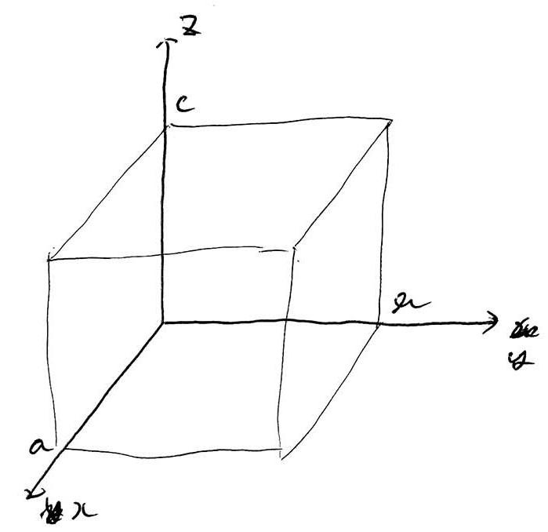
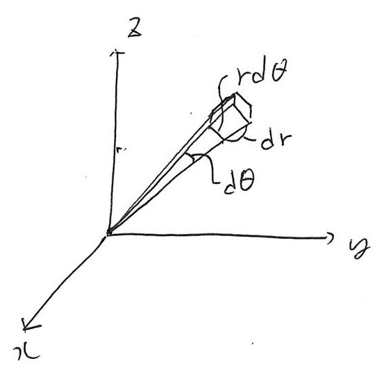
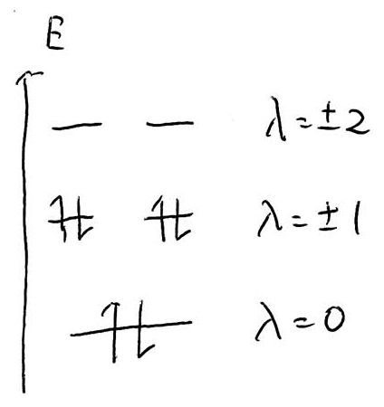
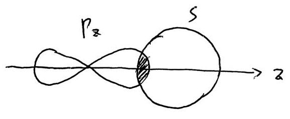
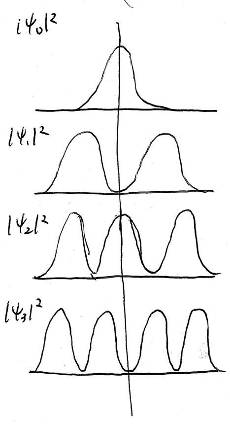

岡林潤(理学部化学科所属, mail:jun@chem.s.u-tokyo.ac.jp)
水素原子について量子論から理解する
化学結合について量子論から理解する
『量子化学』真船先生:著 化学同人
※持ってないと講義について来れないかも
『物理化学』マッカーリ・サイモン:著 化学同人
試験100点, レポート(1回1点程度・二週に一回程度). 出席は評価しない
1900年始め、原子モデルにおいてはトムソンの電子中心モデルと長岡の原子核中心モデルの２つの説が対立していた。これらの議論を解決したのがラザフォードである。ラザフォードは原子にα粒子\(\ce{_{2}^{4}He}\)を入射して、散乱角を調べる実験を行った。この結果、電子によっては散乱されず、原子核によって産卵されるということが判明した。
結果として、陽子はは電子の1840倍の質量を持つ。
参考: 電子\(\ce{e-}\)の質量\(9.11\times10^{-31}\)kg、電荷\(1.6\times10^{-18}\)C、用紙の質量\(1.67\times10^{-27}\)kg、電荷\(1.602\times10^{-19}\)C
ところで、円運動する粒子は電磁波を出してエネルギーを失い、原子核に吸収されてしまう。実際にはそんなことがないのため、古典物理学の世界ではこれは完全に破綻している。そこで登場したのが量子論である。(1913年 ボーア)
グラフの横軸が波長もしくはエネルギーであるもののこと。
以下の様な実験を行う。
\[\ce{H2 -> H + H}\] \[\ce{H + e- -> H^{*}}\] \[\ce{H^{*} -> H + \text{光}}\]
この光を観測したところ、特定の波長のスペクトルしか見れないことが判明した。
380nm以下(紫外) ライアン
380~780nm(UV~可視) バルマー
780nm異常(赤外) パッシェン
\[\frac{1}{\lambda}=R\left(\frac{1}{2^{2}}-\frac{1}{n^{2}}\right)\left(n=1,2,\cdots\right)\]
\(R=1.10\times10^{7}\): リュードベルク定数
一般に \[\frac{1}{\lambda}=R\left(\frac{1}{n_{2}^{2}}-\frac{1}{n_{1}^{2}}\right)\] となる。
古典論における電子の運動
釣り合いの式は \[\frac{e^{2}}{4\pi\varepsilon_{0}r^{2}}=\frac{mv^{2}}{r}\] \[r=\frac{e^{2}}{4\pi\varepsilon mv^{2}}\]
エネルギー保存の式は
\[\begin{aligned} E & = & \frac{1}{2}mv^{2}-\frac{e^{2}}{4\pi\varepsilon_{0}r}\\ & = & \frac{e^{2}}{8\pi\varepsilon_{0}r}-\frac{e^{2}}{4\pi\varepsilon_{0}r}\\ & = & -\frac{e^{2}}{8\pi\varepsilon_{0}r}\end{aligned}\]
\(E\)は\(r\)に依存する。軌道半径が小さいほど\(E\)は小さい。これでは安定してしまい線スペクトルが生じる原因を説明できない。
角運動量\(mvr\)が\(\frac{h}{2\pi}\)の整数倍となるという仮定。
これを解いて \[mvr=n\frac{h}{2\pi}\left(n=1,2,\cdots\right)\] \[\frac{1}{v}=\frac{2\pi mr}{nh}\]
\[\begin{aligned} r & = & \frac{e^{2}}{4\pi\varepsilon_{0}m}\frac{1}{v^{2}}\\ & = & \frac{\pi e^{2}mr^{2}}{n^{2}h^{2}\varepsilon_{0}}\end{aligned}\]
\[\begin{cases} r_{1}=\frac{\pi e^{2}mr^{2}}{h^{2}\varepsilon_{0}} & \left(n=1\right)\\ r_{2}=\frac{\pi e^{2}mr^{2}}{4h^{2}\varepsilon_{0}} & \left(n=2\right)\\ \vdots & \vdots \end{cases}\]
ここでボーア半径\(a_{0}=\frac{h^{2}\varepsilon_{0}}{\pi me^{2}}\left(=0.053\text{nm}\right)\)を定義する。 \[r_{n}=a_{0}n^{2}=0.053n^{2}\]
導出は
\[a_{0}=\frac{h^{2}\varepsilon_{0}}{\pi me^{2}}=\frac{\left(6.63\times10^{-34}\right)^{2}\times\left(8.85\times10^{-12}\right)}{3.14\times\left(9.11\times10^{-31}\right)\times\left(1.6\times10^{-19}\right)^{2}}=0.053\]
※次元チェック\(\mathrm{\frac{J^{2}\cdot s^{2}\cdot c^{2}}{J\cdot m\cdot kg\cdot c^{2}}}\)
\(n=1\)のときの電子の速度 \[v=\frac{nh}{2\pi mr}=\frac{e^{2}}{2nh\varepsilon_{0}}=2.2\times10^{6}\mathrm{\left[m/s\right]}\] これは光速の0.73%に相当する。
この電子のエネルギーは
\[\begin{aligned} E & = & -\frac{e^{2}}{8\pi\varepsilon_{0}}\frac{1}{r_{n}}\\ & = & -\frac{e^{2}}{8\pi\varepsilon_{0}}\frac{\pi e^{2}mr^{2}}{n^{2}h^{2}\varepsilon_{0}}\\ & = & -\frac{me^{4}}{8\varepsilon_{0}^{2}h^{2}}\frac{1}{n^{2}}\end{aligned}\]
\(-\frac{me^{4}}{8\varepsilon_{0}^{2}h^{2}}\)が定数となり、量子化されていることが分かる。
\(n=1\)のとき最安定となる。これを基底状態という。半径\(a_{0}\)
\(n=2\)のとき、励起状態という。半径\(4a_{0}\)
\(n=\infty\)のとき、イオン化状態である。半径\(\infty\)
\[\begin{aligned} \frac{me^{4}}{8\varepsilon_{0}^{2}h^{2}} & = & \frac{9.11\times10^{-31}\times\left(1.6\times10^{-19}\right)^{4}}{8\times\left(8.85\times10^{-12}\right)^{2}\times\left(6.63\times10^{-34}\right)^{2}}\\ & = & 2.18\times10^{-18}\mathrm{J}\\ & = & 13.6\mathrm{eV}\end{aligned}\]
原子がある状態\(n_{1}\)から別の状態\(n_{2}\)に遷移する際、光を放出または吸収する。
光のエネルギーは
\[\begin{aligned} \Delta E & = & E_{n_{1}}-E_{n_{2}}\\ & = & \left(-\frac{me^{4}}{8\varepsilon_{0}^{2}h^{2}}\frac{1}{n_{1}^{2}}\right)-\left(-\frac{me^{4}}{8\varepsilon_{0}^{2}h^{2}}\frac{1}{n_{2}^{2}}\right)\\ & = & \frac{me^{4}}{8\varepsilon_{0}^{2}h^{2}}\left(\frac{1}{n_{2}^{2}}-\frac{1}{n_{1}^{2}}\right)\end{aligned}\]
\(\Delta E=h\nu\), \(\frac{1}{\lambda}=\frac{\nu}{c}\)より、 \[\frac{1}{\lambda}=\frac{me^{4}}{8c\varepsilon_{0}^{2}h^{3}}\left(\frac{1}{n_{2}^{2}}-\frac{1}{n_{1}^{2}}\right)\] となり、線スペクトルの条件を満たす式が求められる。
波は、位相を持ち、干渉効果を持つなどの性質がある。
いっぽう粒子は、質量、電荷を持つなどの性質がある。
「粒子として存在している物質もある条件下で波として振る舞う」byド・ブロイ
以下の実験を行う。
\[\mathrm{AS}-\mathrm{BS}=a\sin\theta\]
\[\sim a\tan\theta=\frac{ax}{l}\]
明線: \(\frac{ax}{l}=m\lambda\left(m=0,1,2,\cdots\right)\)
暗線: \(\frac{ax}{l}=\left(m+\frac{1}{2}\right)\lambda\)
\(x=\frac{ml\lambda}{a}\)なので明線間隔\(\Delta x=\frac{l\lambda}{a}\)
以下の実験を行う。
光が波であれば光の強弱は振幅の二乗に比例する。つまり低い\(\nu\)の光でも強くすれば光電効果が起こるはず。だが実際にはそのようなことは起こらない。よって光は粒子性を持つためだ、とアインシュタインは考えた。
相対論では \[m=\frac{m_{0}}{\sqrt{1-\frac{v^{2}}{c^{2}}}}\] \[E=mc^{2}\] \[p=mv\] \[E^{2}=m_{0}^{2}c^{4}+p^{2}c^{2}\]
ここで光の粒子(光子)に対して\(m_{0}=0\), \(E=h\nu=h\frac{c}{\lambda}\)を用いて \[p=\frac{h}{\lambda}\] となる。この式は、粒子性\(p\)と波動性\(\lambda\)を結びつけた式だといえる。
電子は\(-1.602\times10^{-19}\)(c)の電荷を帯びた粒子である。しかし、電子源から出た電子の光路差を用いた干渉実験により波動性が示された。(アハラノフ・ボーム効果)
先の式より \[\lambda=\frac{h}{mv}=\frac{h}{p}\]
これをドブロイ波長と呼ぶ。
電子のドブロイ波長は
\[\begin{aligned} \lambda & = & \frac{h}{mv}\\ & = & \frac{6.6\times10^{-34}}{9.11\times10^{-31}\times3\times10^{-6}}\\ & = & 2.43\times10^{-10}\\ & = & 0.243\mathrm{nm}\end{aligned}\]
これはボーア半径の4~5倍に相当。この波長の内側では電子は粒子性と波動性を併せ持つ。
ボーアの量子条件とは、\(mvr=n\frac{h}{2\pi}\)というものであった。
また、ドブロイ波長は\(\lambda=\frac{h}{mv}\)であった。これにボーアの量子条件を代入すると、
\[\begin{aligned} h & = & \frac{h}{\frac{nh}{2\pi r}}\\ & = & \frac{2\pi r}{n}\end{aligned}\]
よって\(2\pi r=n\lambda\)
ここから、電子は定在波を作る。(一周すると波長の整数倍となる)
ここまででテキストp.23まで。
(試験のうち数問は章末問題から出す。)
「東大 スペクトル」で検索した先に講義の資料を掲載する。
ドブロイ波長とは物質の運動量を波長で表したもの。
\(m=\frac{m_{0}}{\sqrt{1-\frac{v^{2}}{c^{2}}}},\: p=mv,\: E=m_{0}^{2}c^{4}+p^{2}c^{2}\)では\(m_{0}=0\)だとまったく意味が無いのでは？→相対論において分母が大きくなり\(m_{0}=0\)に近くなるという約束事
光電効果は波動性を否定したのみで粒子性の証拠ではない→コンプトン効果
2.4: 電子の波動性は電子線懐石から分かる
質量\(\rho\mathrm{d}x\), 加速度\(\frac{\partial^{2}u\left(x,t\right)}{\partial t^{2}}\)
張力の垂直成分\(F=T\sin\theta_{1}-T\sin\theta_{2}\)
\[\sin\theta\sim\tan\theta=\frac{\partial u}{\partial x}\]
\[\begin{aligned} \sin\theta_{1}-\sin\theta_{2} & = & \left(\frac{\partial u}{\partial x}\right)_{x+\frac{\mathrm{d}x}{2}}-\left(\frac{\partial u}{\partial x}\right)_{x-\frac{\mathrm{d}x}{2}}\\ & = & \frac{\partial^{2}u}{\partial t^{2}}\mathrm{d}x\end{aligned}\]
運動方程式
\[T\frac{\partial^{2}u}{\partial x^{2}}\mathrm{d}x=\rho\mathrm{d}x\frac{\partial^{2}u}{\partial t^{2}}\]
\[\frac{\partial^{2}u}{\partial x^{2}}=\frac{\rho}{T}\frac{\partial^{2}u}{\partial t^{2}}\]
\(v=\sqrt{\frac{T}{\rho}}\)とすると \[\frac{\partial^{2}u}{\partial x^{2}}=\frac{1}{v^{2}}\frac{\partial^{2}u}{\partial t^{2}}\]
となり、これが波動方程式であり、偏微分方程式となる。
2境界条件\(u\left(0,t\right)=u\left(l,t\right)=0\)とする。
変数分離\(u\left(x,t\right)=f\left(x\right)g\left(t\right)\)
波動方程式の左辺は \[\frac{\partial^{2}\left(f\left(x\right)g\left(t\right)\right)}{\partial x^{2}}=g\left(t\right)\frac{\partial^{2}f\left(x\right)}{\partial x^{2}}\]
右辺は \[\frac{1}{v^{2}}\frac{\partial^{2}\left(f\left(x\right)g\left(t\right)\right)}{\partial t^{2}}=\frac{1}{v^{2}}f\left(x\right)\frac{\partial^{2}g\left(t\right)}{\partial t^{2}}\]
\[\Rightarrow\frac{1}{f\left(x\right)}\frac{\partial^{2}f\left(x\right)}{\partial x^{2}}=\frac{1}{v^{2}}\frac{1}{g\left(t\right)}\frac{\partial^{2}g\left(t\right)}{\partial t^{2}}\left(=k\right)\]
\[\Rightarrow\frac{\partial^{2}f\left(x\right)}{\partial x^{2}}-kf\left(x\right)=0\]
\[\frac{\partial^{2}g\left(t\right)}{\partial t^{2}}-fv^{2}g\left(t\right)=0\]
の二式を解く。
\(k>0,k=0\)では振動しない
\(k<0\)のとき\(k=-\alpha^{2}\)とおくと
\[\frac{\mathrm{d}^{2}f\left(x\right)}{\mathrm{d}x^{2}}+\alpha^{2}f\left(x\right)=0\]
単振動となる。ここから
\[f\left(x\right)=A\cos\alpha x+B\sin\alpha x\] となる。ここで\(A,B\)は定数
いま、弦が\(x=0\)で固定
\[f\left(0\right)=A=0\]
よって\(f\left(x\right)=B\sin\alpha x\)
\(x=l\)で固定すると
\[f\left(l\right)=B\sin\alpha l=0\]
\[\alpha l=n\pi\]
となる。ここで\(n\)は整数である。
\[\begin{aligned} f_{n}\left(x\right) & = & \sin\frac{n\pi}{l}x\\ & = & -\sin\frac{\left(-n\right)\pi x}{l}\\ & = & -f_{-n}\left(x\right)\end{aligned}\]
となる。
\(n=0\)では\(f_{n}\left(x\right)=0\)
次に\(\frac{\partial^{2}g\left(t\right)}{\partial t^{2}}-fv^{2}g\left(t\right)=0\)を解く。 \[g_{n}\left(t\right)=C\cos w_{n}t+D\sin w_{n}t=a_{n}\cos\left(w_{0}t+\phi_{n}\right)\]
ただし\(w_{n}=\frac{n\pi v}{l}\)
よって波動方程式の解は \[u\left(x,t\right)=f_{n}\left(x\right)g_{n}\left(t\right)-a_{n}\sin\frac{n\pi}{l}x\cos\left(w_{n}t+\phi_{n}\right)\]
\(w_{n}=\frac{n\pi}{l}v\)となっている。一方\(w_{n}=2\pi\nu_{n}\)となる。
\[\begin{aligned} v & = & \frac{w_{n}l}{n\pi}\\ & = & \frac{2\pi\nu_{n}l}{n\pi}\\ & = & \frac{2\nu_{n}l}{n}\end{aligned}\]
波形から、波長\(\lambda_{n}\)は\(\frac{2l}{n}\)なので、 \[v=\lambda_{n}\nu_{n}\]
波の性質から速度になっている。
\[v=\sqrt{\frac{T}{\rho}}\]
一次元の弦から二次元の膜へと話が変わる。変位\(u\left(x,y,t\right)\)に対して \[\frac{\partial^{2}u}{\partial x^{2}}+\frac{\partial^{2}u}{\partial y^{2}}=\frac{1}{v^{2}}\frac{\partial^{2}u}{\partial t^{2}}\]
境界条件は \[u\left(0,y,t\right)=u\left(a,y,t\right)=0\] \[u\left(x,0,t\right)=u\left(x,b,t\right)=0\]
これは変数分離により解ける。
\[\begin{aligned} u\left(x,y,t\right) & = & f_{n,m}\left(x,y\right)g_{n,m}\left(t\right)\\ & = & a_{n,m}\sin\frac{n\pi}{a}x\sin\frac{m\pi}{b}y\cos\left(w_{n,m}+\phi_{n,m}\right)\end{aligned}\]
単純な境界条件だったために解くことができたが、一般に二次元の波動方程式を解くのは非常に難しい。円形の膜ではベッセル関数という特殊な関数を導入する必要がある。
ド・ブロイの式は粒子性と波動性を結ぶ式であった。
\[p=\frac{h}{\lambda}\]
\[\frac{\partial^{2}u\left(x,t\right)}{\partial x^{2}}-\frac{1}{v^{2}}\frac{\partial^{2}u\left(x,t\right)}{\partial t^{2}}=0\] の解は \[u\left(x,t\right)=a_{n}\sin\frac{n\pi x}{l}\cos\left(w_{0}t+\phi_{n}\right)\] であった。いま、簡単のために\(a_{n}=1,\phi_{n}=0\)とする。
※文字に注意。\(\Psi,\psi\)はプサイ、\(\Phi,\phi,\varphi\)はファイである。
\[\rightarrow u\left(x,t\right)=\psi\left(x\right)\cos wt\] \[\rightarrow\frac{\mathrm{d}^{2}\psi\left(x\right)}{\mathrm{d}x^{2}}\cos wt+\frac{w^{2}}{v^{2}}\psi\left(x\right)\cos wt=0\]
\(\cos wt\)についての恒等式として \[\frac{\mathrm{d}^{2}\psi\left(x\right)}{\mathrm{d}x^{2}}+\frac{w^{2}}{v^{2}}\psi\left(x\right)=0\]
\(v=\lambda\nu\)より
\[\begin{aligned} \frac{w^{2}}{v^{2}} & = & \frac{4\pi^{2}\nu^{2}}{v^{2}}\\ & = & \frac{4\pi\nu^{2}}{\lambda^{2}\nu^{2}}\\ & = & \frac{4\pi}{\lambda^{2}}\end{aligned}\]
ド・ブロイの式を用いて
\[\begin{aligned} & = & \frac{4\pi^{2}p^{2}}{h^{2}}\end{aligned}\]
\(\hbar=\frac{h}{2\pi}\)とおくと \[=\frac{p^{2}}{\hbar^{2}}\]
この関係式を用いて \[\frac{\mathrm{d}^{2}f\left(x\right)}{\mathrm{d}x^{2}}+\frac{p^{2}}{\hbar^{2}}\psi\left(x\right)=0\] と書ける。
粒子のエネルギー\(E=\frac{p^{2}}{2m}+U\left(x\right)\)となるので、 \[p^{2}=2m\left(E-U\left(x\right)\right)\]
よって \[\frac{\mathrm{d}\psi\left(x\right)}{\mathrm{d}x^{2}}+\frac{2m}{\hbar^{2}}\left(E-U\left(x\right)\right)\psi\left(x\right)=0\]
式変形して \[-\frac{\hbar^{2}}{2m}\frac{\mathrm{d}^{2}\psi\left(x\right)}{rd}x^{2}+U\left(x\right)\psi\left(x\right)=E\psi\left(x\right)\]
これがシュレディンガー方程式(Schrödinger eq.)である。
※ハミルトニアンは\(\mathcal{H}\)(花文字)もしくは\(\hat{H}\)で表す。
演算子として \[\hat{H}=-\frac{\hbar^{2}}{2m}\frac{\mathrm{d}}{\mathrm{d}x^{2}}+U\left(x\right)\] を定義する。これを用いてシュレディンガー方程式は \[\hat{H}\psi\left(x\right)=E\psi\left(x\right)\] と書ける。
一般に演算子\(\hat{A}\)に対して関数\(\varphi\)、定数\(a\)が \[\hat{A}\varphi=a\varphi\] を満たすとする。このとき\(\varphi\)を固有ベクトル、\(a\)を固有値という。
シュレディンガー方程式を解く⇔与えられた\(\hat{H}\)に対して\(\psi\left(x\right),E\)を求める
となる。
ハミルトニアンとは、全エネルギーを演算子にしたものである。
\[\hat{H}=-\frac{\hbar^{2}}{2m}\frac{\mathrm{d}^{2}}{\mathrm{d}x^{2}}+U\left(x\right)\]
\(-\frac{\hbar^{2}}{2m}\frac{\mathrm{d}^{2}}{\mathrm{d}x^{2}}=\frac{p}{2m}\)なので、運動量も演算子 \[\hat{p}=-i\hbar\frac{\mathrm{d}}{\mathrm{d}x}\] と書けることがわかる。（運動量演算子）
シュレディンガー方程式の簡単な例である。
\(0\leq x\leq a\)において自由に動ける粒子を考える。つまり、 \[0\leq x\leq a\rightarrow U\left(x\right)=0\] \[x<0,a<x\rightarrow U\left(x\right)=\infty\] とする。
\(0\leq x\leq a\)におけるシュレディンガー方程式は、 \[\hat{H}=-\frac{\hbar^{2}}{2m}\frac{\mathrm{d}^{2}}{\mathrm{d}x^{2}}\] となるので、 \[-\frac{\hbar^{2}}{2m}\frac{\mathrm{d}^{2}\psi\left(x\right)}{\mathrm{d}x^{2}}=E\psi\left(x\right)\] となる。
このとき固有関数\(\psi\left(x\right)=A\cos kx+B\sin kx\)、固有値\(E=\frac{\hbar^{2}k^{2}}{2m}\)となる。
シュレディンガー方程式に\(\psi\left(x\right)\)を代入
\[\begin{aligned} -\frac{\hbar^{2}}{2m}\frac{\mathrm{d}^{2}\psi\left(x\right)}{\mathrm{d}x^{2}} & = & -\frac{\hbar^{2}}{2m}\left(-Ak^{2}\cos kx-Bk^{2}\sin kx\right)\\ & = & \frac{\hbar^{2}k^{2}}{2m}\left(A\cos kx+B\sin kx\right)\\ & = & \frac{\hbar^{2}k^{2}}{2m}\psi\left(x\right)\end{aligned}\]
よって\(E=\frac{\hbar^{2}k^{2}}{2m}\)
境界条件について、\(\psi\left(0\right)=\psi\left(a\right)=0\)となる。
\(\psi\left(0\right)=0\)より\(\psi\left(0\right)=A=0\)
\(\psi\left(a\right)=0\)より\(\psi\left(a\right)=B\sin ka=0\Rightarrow ka=n\pi\Rightarrow k=\frac{n\pi}{a}\)(\(k\):波数)
よって固有関数は \[\psi_{n}\left(x\right)=B\sin\frac{n\pi}{a}x\] (\(n=1,2,3\cdots\))
固有値は
\[\begin{aligned} E & = & \frac{\hbar^{2}k^{2}}{2m}\\ & = & \frac{\hbar^{2}n^{2}\pi^{2}}{2ma^{2}}\\ & = & \frac{h^{2}n^{2}}{8ma^{2}}\end{aligned}\]
このように、\(E\)が\(n\)によって飛び飛びの値をとることになる。（量子化）
固有値はエネルギーとして理解できるが、固有関数とは何なのかについて考察する。
\(\psi\left(x\right)\)は複素数。\(\psi^{\star}\left(x\right)\)を\(\psi\left(x\right)\)の共役とする。
ボルンの解釈では、波動関数の二乗が\(x\sim x+\mathrm{d}x\)の間に存在する確率に比例する。
\[\psi^{\star}\left(x\right)\psi\left(x\right)\mathrm{d}x=\left|\psi\left(x\right)\right|^{2}\mathrm{d}x\]
\(\psi\left(0\right)=\psi\left(a\right)=0\)としたのは、\(x=0,a\)では\(U\rightarrow\infty\)となり粒子が存在できないため。
光の強度の検出
光の強度は光子の数に比例する。波であれば強度は振幅の二乗に比例する。すなわち、\(u\left(x,t\right)\rightarrow\left|u\left(x,t\right)\right|^{2}\)に比例。
比例する事象を確率として表したい。このとき、全空間の合計が1になるよう規格化を行う。
\[\int\psi^{\star}\left(x\right)\psi\left(x\right)\mathrm{d}x=1\]
今の場合、 \[\int_{0}^{a}\psi^{\star}\left(x\right)\psi\left(x\right)\mathrm{d}x=1\]
実際に \[\int_{0}^{a}\psi^{\star}\left(x\right)\psi\left(x\right)\mathrm{d}x=\int_{0}^{a}B^{2}\sin^{2}\frac{n\pi}{a}x\mathrm{d}x=1\]
\[\rightarrow B=\sqrt{\frac{2}{a}}\]
よって自由粒子の波動関数 \[\psi_{n}\left(x\right)=\sqrt{\frac{2}{a}}\sin\frac{n\pi}{a}x\] (\(n=1,2,3\cdots\))
これが量子数である。
2.5 電子の速度を\(c\)の\(\frac{1}{100}\)として\(3\times10^{6}\mathrm{\nicefrac{m}{s}}\)を用いた
2.8 \(B=1\)とした
プリント【11】 \(\mathrm{e}^{-ax^{2}}\)(マイナスが必要)
\[\int_{-\infty}^{\infty}\mathrm{e}^{-ax^{2}}\mathrm{d}x=\sqrt{\frac{\pi}{a}}\]
\[\begin{aligned} I & = & \int_{-\infty}^{\infty}\mathrm{e}^{-ax^{2}}\mathrm{d}x\\ & = & \int_{-\infty}^{\infty}\mathrm{e}^{-ay^{2}}\mathrm{d}y\end{aligned}\]
として、 \[I^{2}=\int\int_{-\infty}^{\infty}\mathrm{e}^{-1\left(x^{2}+y^{2}\right)}\mathrm{d}x\mathrm{d}y\]
\(x=r\cos\theta,\: y=r\sin\theta\)とおいて、
\[\begin{aligned} I^{2} & = & \int_{0}^{2\pi}\int_{0}^{\infty}\mathrm{e}^{-ar^{2}}r\mathrm{d}r\mathrm{d}\theta\\ & = & 2\pi\int\frac{1}{2}\mathrm{e}^{-1\alpha r^{2}}\mathrm{d}r^{2}\\ & = & \frac{1}{2}2\pi\frac{1}{-\alpha}\left[\mathrm{e}^{-\alpha r^{2}}\right]_{r^{2}=0}^{r^{2}=\infty}\\ & = & \frac{\pi}{\alpha}\end{aligned}\]
\[I=\sqrt{\frac{\pi}{\alpha}}\]
前回までの話ではシュレディンガー方程式 \[-\frac{\hbar^{2}}{2m}\frac{\mathrm{d}^{2}}{\mathrm{d}x^{2}}\psi=E\psi\] の解が、
固有値\(\psi_{n}=\sqrt{\frac{2}{a}}\sin\frac{n\pi}{a}x\)
エネルギー固有値\(E_{n}=\frac{h^{2}n^{2}}{8ma^{2}}\left(n=1,2,3,\cdots\right)\)
となるのであった。
シュレディンガー方程式を解くときには、古典力学とはまったく異なる方法を使うことになる。
(1) 最低エネルギーを考える。
\(n=1\)のとき\(E_{1}=\frac{h^{2}}{8ma^{2}}\)となり、量子力学では最安定な基底状態においてもエネルギーはゼロではない。
\(m\)が大きい時\(E_{1}\)はゼロに近づき、古典粒子の状態に近づいてゆく。
(2) 質量の効果が異なる。
古典力学においてはエネルギーは連続であるが、量子力学では\(m\)と\(a\)に依存する。
\(m\)が大きいと\(\Delta E_{n}\left(=E_{n+1}-E_{n}\right)\)は小さくなり、飛び飛びであった量子状態が連続状態になる。
(3) 大きさ
\(a\)が大きいと古典的になる。
(4) 節の数
\(n\)が大きいと\(E\)が高くなる。
1,3-ブタジエン
\[\ce{H2C\bond{=}CH\bond{-}CH\bond{=}CH2}\]
1,3,5-ヘキサトリエン \[\ce{H2C\bond{=}CH\bond{-}CH\bond{=}CH\bond{-}CH\bond{=}CH2}\]
これらの分子は単結合、二重結合が交互に並んでいる→π電子共役系
これらのπ電子は分子の外には広がらない。ここで分子を一次元鎖とみなすと、井戸型ポテンシャルの状態とみなすことができる。
二重結合の両端からそれぞれ電子を供出してπ電子となる。
1,3-ブタジエンの場合、4つのπ電子が存在することになる。
\(n=1\)に2個、\(n=2\)に2個詰まると基底状態となる。
励起エネルギー\(\Delta E\)のとき遷移できる。
\[E_{n}=\frac{h^{2}n^{2}}{8ma^{2}}\]
\[\begin{aligned} \Delta E_{2} & = & E_{3}-E_{2}\\ & = & \frac{h^{2}\left(3^{2}-2^{2}\right)}{8ma^{2}}\\ & = & \frac{5h^{2}}{8ma^{2}}\end{aligned}\]
1,3-ブタジエンの幅を\(0.58\mathrm{mm}\)とすると、
\[\begin{aligned} \Delta E_{2} & = & \frac{5\times\left(6.6\times10^{-34}\right)^{2}}{8\times9.1\times10^{-31}\times\left(5.8\times10^{-10}\right)^{2}}\\ & = & 8.9\times10^{-19}\mathrm{J}\end{aligned}\]
と具体的に求めることができる。
\(E=h\nu=h\frac{c}{\lambda}\)より、
\[\begin{aligned} \lambda & = & \frac{hc}{\Delta E_{2}}\\ & = & \frac{6.6\times10^{-34}\times3\times10^{8}}{8.9\times10^{-19}}\\ & = & 220\mathrm{nm}\end{aligned}\]
これは測定値と一致する。
ヘキサトリエンの場合、\(n=1\)に2個、\(n=2\)に2個、\(n=3\)に2個の電子が詰まっている。
ヘキサトリエンの幅は\(0.87\mathrm{nm}\)であることを用いて、\(n=3\)から\(n=4\)への遷移は
\[\begin{aligned} \Delta E_{3} & = & E_{4}-E_{3}\\ & = & \frac{h^{2}\left(4^{2}-3^{2}\right)}{8ma^{2}}\\ & = & \frac{7h^{2}}{8ma^{2}}\\ & = & \cdots\\ & = & 5.5\times10^{-19}\mathrm{J}\end{aligned}\]
\[\begin{aligned} \lambda & = & \frac{hc}{\Delta E_{3}}\\ & = & \cdots\\ & = & 360\mathrm{nm}\end{aligned}\]
こちらも測定値と一致する。
ジフェニルポリエン \[\ce{C6H5(CH\bond{=}CH)_{k}C6H5}\]
のように鎖長\(k\)が長くなると、光吸収の極大波長(ピーク波長)はさらに長くなり、紫外域から可視域へとシフトしてゆく。励起エネルギーは小さくなる。
波動関数は、原子、分子の粒子の中の状態を表すもの。定義された領域で一価、連続、有限で、\(\psi\left(\boldsymbol{r},t\right)\)とあらわす。
微小空間\(\mathrm{d}\tau=\mathrm{d}x\mathrm{d}y\mathrm{d}z\)中二粒子が存在する確率は \[\psi^{*}\left(\boldsymbol{r},t\right)\psi\left(\boldsymbol{r},t\right)\mathrm{d}x\mathrm{d}y\mathrm{d}z=\left|\psi\left(\boldsymbol{r},t\right)\right|^{2}\mathrm{d}x\mathrm{d}y\mathrm{d}z\]
全領域では \[\iiint\left|\psi\left(\boldsymbol{r},t\right)\right|^{2}\mathrm{d}x\mathrm{d}y\mathrm{d}z=1\]
と規格化される。
量子化学では物理量\(A\)は演算子\(\hat{A}\)とみなされる。
演算子\(\hat{A}\)の異なる固有値\(a_{n},a_{m}\)に対応する\(\psi_{n},\psi_{m}\)が \[\int\psi_{n}^{*}\psi_{m}\mathrm{d}t=0\left(n\neq m\right)\] を満たすとき、\(\psi_{n}\)と\(\psi_{m}\)は“直交している”という。
\[\begin{aligned} \int\psi_{n}^{*}\psi_{m}\mathrm{d}\tau & = & \int_{0}^{a}\left(\sqrt{\frac{2}{a}}\sin\frac{n\pi}{a}x\right)\left(\sqrt{\frac{2}{a}}\sin\frac{m\pi}{a}x\right)\mathrm{d}x\\ & = & \frac{1}{a}\int_{0}^{a}\left(\cos\frac{n-m}{a}\pi x-\cos\frac{n+m}{a}\pi x\right)\mathrm{d}x\\ & = & 0\end{aligned}\]
一つの固有値に対して複数の固有関数があるときを“縮退”しているという。
ある粒子の状態\(\psi_{n}\left(n=1,2,3\cdots\right)\)とする。
物理量\(A\)の期待値\(\left\langle A\right\rangle \)は、 \[\left\langle A\right\rangle =\int\psi_{n}^{*}\hat{A}\psi_{n}\mathrm{d}\tau\]
全エネルギー\(\left\langle E_{n}\right\rangle \)は、 \[\left\langle E_{n}\right\rangle =\int\psi_{n}^{*}\hat{H}\psi_{n}\mathrm{d}\tau\]
シュレディンガー方程式は、 \[\hat{H}\psi_{n}=E_{n}\psi_{n}\]
左から\(\psi_{n}^{*}\)をかけて積分すると、
\[\begin{aligned} \int\psi_{n}^{*}\hat{H}\psi_{n}\mathrm{d}\tau & = & \int\psi_{n}^{*}E_{n}\psi_{n}\mathrm{d}\tau\\ & = & E_{n}\int\psi_{n}^{*}\psi_{n}\mathrm{d}\tau\\ & = & E_{n}\end{aligned}\]
\[\begin{aligned} \left\langle x\right\rangle & = & \int\psi_{1}^{*}\left(x\right)\cdot x\cdot\psi\left(x\right)\mathrm{d}x\\ & = & \int_{0}^{a}\left(\sqrt{\frac{2}{a}}\sin\frac{\pi}{a}x\right)x\left(\sqrt{\frac{2}{a}}\sin\frac{\pi}{a}x\right)\mathrm{d}x\\ & = & \frac{2}{a}\int x\sin^{2}\frac{\pi}{a}x\mathrm{d}x\\ & = & \frac{a}{2}\end{aligned}\]
となる。
\(0\leq x\leq a\)にてたいしょうなので、井戸の中心に期待値が大きい。
\[\begin{aligned} \left\langle p\right\rangle & = & \int\psi_{1}^{*}\left(x\right)\left(-i\hbar\frac{\mathrm{d}}{\mathrm{d}x}\right)\psi_{1}\left(x\right)\mathrm{d}x\\ & = & \int_{0}^{a}\sqrt{\frac{2}{a}}\sin\frac{\pi}{a}x\left(-i\hbar\frac{\mathrm{d}}{\mathrm{d}x}\right)\sqrt{\frac{2}{a}}\sin\frac{\pi}{a}x\mathrm{d}x\\ & = & -i\hbar\frac{2}{a}\int_{0}^{a}\left(\sin\frac{\pi}{a}x\right)\frac{\mathrm{d}}{\mathrm{d}x}\sin\frac{\pi}{a}x\mathrm{d}x\\ & = & -i\hbar\frac{2}{a^{2}}\int_{0}^{a}\sin\frac{\pi}{a}x\cdot\cos\frac{\pi}{a}x\mathrm{d}x\\ & = & -i\hbar\frac{\pi}{a^{2}}\int_{0}^{a}\sin\frac{2\pi}{a}x\mathrm{d}x\\ & = & 0\end{aligned}\]
\(r_{1}\)のみに依存する→\(\hat{H}_{1}\)
\(r_{2}\)のみに依存する→\(\hat{H}_{2}\)
この時、 \[\hat{H}_{1}\psi_{1}\left(r_{1}\right)=E_{1}\psi_{1}\left(r_{1}\right)\] \[\hat{H}_{2}\psi_{2}\left(r_{2}\right)=E_{2}\psi_{2}\left(r_{2}\right)\]
ハミルトニアン\(\hat{H}=\hat{H}_{1}+\hat{H}_{2}\)の固有関数は\(\psi_{1}\left(r_{1}\right),\psi_{2}\left(r_{2}\right)\)、固有値は\(E_{1}+E_{2}\)
これを実際に代入すると、
\[\begin{aligned} \hat{H}\psi_{1}\left(r_{1}\right)\psi_{2}\left(r_{2}\right) & = & \left(\hat{H}_{1}+\hat{H}_{2}\right)\psi_{1}\left(r_{1}\right)\psi_{2}\left(r_{2}\right)\\ & = & \hat{H}_{1}\psi_{1}\left(r_{1}\right)\psi_{2}\left(r_{2}\right)+\hat{H}_{2}\psi_{1}\left(r_{1}\right)\psi_{2}\left(r_{2}\right)\\ & = & E_{1}\psi_{1}\left(r_{1}\right)\psi_{2}\left(r_{2}\right)+E_{2}\psi_{1}\left(r_{1}\right)\psi_{2}\left(r_{2}\right)\\ & = & \left(E_{1}+E_{2}\right)\psi_{1}\left(r_{1}\right)\psi_{2}\left(r_{2}\right)\end{aligned}\]
ここで\(\hat{H}_{1}\)は\(\psi_{1}\)に、\(\hat{H}_{2}\)は\(\psi_{2}\)にしか作用しない。
今までの話は一次元だった→三次元へ拡張
一次元→\(K=\frac{1}{2}mv^{2}=\frac{p^{2}}{2m}\)
三次元→\(K=\frac{p_{x}^{2}}{2m}+\frac{p_{y}^{2}}{2m}+\frac{p_{z}^{2}}{2m}\)→\(-\frac{\hbar^{2}}{2m}\)\(\left(\frac{\partial^{2}}{\partial x^{2}}+\frac{\partial^{2}}{\partial y^{2}}+\frac{\partial^{2}}{\partial z^{2}}\right)\)

\(0\leq x\leq a,0\leq y\leq b,0\leq z\leq c\)
箱の中の粒子のシュレディンガー方程式
\[\begin{aligned} \hat{H}\psi\left(x,y,z\right) & = & -\frac{\hbar^{2}}{2m}\left(\frac{\partial^{2}\psi}{\partial x^{2}}+\frac{\partial^{2}\psi}{\partial y^{2}}+\frac{\partial^{2}\psi}{\partial z^{2}}\right)\\ & = & E\psi\left(x,y,z\right)\end{aligned}\]
これを \[\psi\left(x,y,z\right)=X\left(x\right)Y\left(y\right)Z\left(z\right)\] と変数分離したい。
境界条件
\[X\left(0\right)=X\left(a\right)=0\]
\[Y\left(0\right)=Y\left(b\right)=0\]
\[Z\left(0\right)=Z\left(c\right)=0\] を入れて解くと
\[-\frac{\hbar^{2}}{2m}\left(YZ\frac{\partial^{2}X}{\partial x^{2}}+ZX\frac{\partial^{2}Y}{\partial y^{2}}+XY\frac{\partial^{2}Z}{\partial z^{2}}\right)=EXYZ\]
両辺を\(XYZ\)で割ると、 \[-\frac{\hbar^{2}}{2m}\frac{1}{X}\frac{\partial^{2}X}{\partial x^{2}}-\frac{\hbar^{2}}{2m}\frac{1}{Y}\frac{\partial^{2}Y}{\partial y^{2}}-\frac{\hbar^{2}}{2m}\frac{1}{Z}\frac{\partial^{2}Z}{\partial z^{2}}=E\]
この式が成り立つには、 \[-\frac{\hbar^{2}}{2m}\frac{1}{X}\frac{\partial^{2}X}{\partial x^{2}}=E_{x}\] \[-\frac{\hbar^{2}}{2m}\frac{1}{Y}\frac{\partial^{2}Y}{\partial y^{2}}=E_{y}\] \[-\frac{\hbar^{2}}{2m}\frac{1}{Z}\frac{\partial^{2}Z}{\partial z^{2}}=E_{z}\] ここで\(E=E_{x}+E_{y}+E_{z}\)
よって \[-\frac{\hbar^{2}}{2m}\frac{\partial^{2}X}{\partial x^{2}}=E_{x}X\]
これは一次元のシュレディンガー方程式である。
解は \[X\left(x\right)=\sqrt{\frac{2}{a}}\sin\frac{n_{x}\pi}{a}x\left(n_{x}=1,2,\cdots\right)\] \[Y\left(y\right)=\sqrt{\frac{2}{b}}\sin\frac{n_{y}\pi}{b}y\left(n_{y}=1,2,\cdots\right)\] \[Z\left(z\right)=\sqrt{\frac{2}{c}}\sin\frac{n_{z}\pi}{c}z\left(n_{z}=1,2,\cdots\right)\] となる。
よって \[\psi\left(x,y,z\right)=\sqrt{\frac{8}{abc}}\sin\frac{n_{x}\pi}{a}x\sin\frac{n_{y}\pi}{b}y\sin\frac{n_{z}\pi}{c}z\left(n_{x},n_{y}n_{z}=1,2,\cdots\right)\]
これは規格化されているか？(\(\int\psi^{*}\psi\mathrm{d}x\mathrm{d}y\mathrm{d}z=1\))
教科書p.68例題参照→規格化されている。
波動関数は3つの量子数\(\left(n_{x},n_{y},n_{z}\right)\)で指定される。
\[E_{x}=\frac{h^{2}n_{x}^{2}}{8ma^{2}},E_{x}=\frac{h^{2}n_{y}^{2}}{8mb^{2}},E_{x}=\frac{h^{2}n_{z}^{2}}{8mc^{2}}\] なので、 \[E=\frac{h^{2}}{8m}\left(\frac{n_{x}^{2}}{a^{2}}+\frac{n_{y}^{2}}{b^{2}}+\frac{n_{z}^{2}}{c^{2}}\right)\left(n_{x},n_{y}n_{z}=1,2,\cdots\right)\]
これが三次元でのシュレディンガー方程式となる。
ここで\(a=b=c\)とすると、
エネルギーが同じでも状態が異なる縮退と呼ばれる減少が発生する。ここで\(a>b=c\)などになるとエネルギー準位がずれる。これを「縮退が解ける」と呼ぶ。
今後中心に向かう力(中心力)の場を考えることが多くなる。
例 クーロンポテンシャル \(U\left(r\right)=-\frac{e^{2}}{4\pi\varepsilon_{0}r}\)
\(\left(x,y,z\right)\rightarrow\left(r,\theta,\phi\right)\)への変換を行い、中心力を扱いやすくする。
\[x=r\sin\theta\cos\phi\] \[y=r\sin\theta\sin\phi\] \[z=r\cos\theta\]
定義域は\(r>0,0\leq\theta\leq\pi,0<\phi\leq2\pi\)である。
\[\nabla^{2}=\frac{\partial^{2}}{\partial x^{2}}+\frac{\partial^{2}}{\partial y^{2}}+\frac{\partial^{2}}{\partial z^{2}}\] を極座標で表す。
※\(\nabla^{2}\)はラプラシアンの記号、\(\nabla\)はナブラである。
\[\nabla=\left(\begin{array}{c} \frac{\partial}{\partial x}\\ \frac{\partial}{\partial y}\\ \frac{\partial}{\partial z} \end{array}\right)\]
\[\nabla^{2}=\frac{1}{r^{2}}\frac{\partial}{\partial r}\left(r^{2}\frac{\partial}{\partial r}\right)+\frac{1}{r^{2}}\left\{ \frac{1}{\sin\theta}\frac{\partial}{\partial\theta}\left(\sin\theta\frac{\partial}{\partial\theta}\right)+\frac{1}{\sin^{2}\theta}\frac{\partial^{2}}{\partial\phi^{2}}\right\}\]
また、微小空間の体積を求めたい。

これを上から見ると、
体積は、 \[\mathrm{d}r\cdot r\mathrm{d}\theta\cdot r\sin\theta\mathrm{d}\phi=r^{2}\sin\theta\mathrm{d}r\mathrm{d}\theta\mathrm{d}\phi\] となる。
直交座標系の微小体積は\(\mathrm{d}x\mathrm{d}y\mathrm{d}z\)で、この時の波動関数は、 \[\int_{-\infty}^{\infty}\int_{-\infty}^{\infty}\int_{-\infty}^{\infty}\left|\psi\left(x,y,z\right)\right|^{2}\mathrm{d}x\mathrm{d}y\mathrm{d}z\] であった。
これは極座標では、 \[\int_{0}^{2\pi}\int_{0}^{\pi}\int_{0}^{\infty}\left|\psi\left(r,\theta,\phi\right)\right|^{2}r^{2}\sin\theta\mathrm{d}r\mathrm{d}\theta\mathrm{d}\phi\] となる。
陽子1個、電子1個の系について、厳密解を求める。

ハミルトニアンは、 \[\hat{H}=-\frac{\hbar^{2}}{2M}\nabla_{1}^{2}-\frac{\hbar^{2}}{2m}\nabla_{2}^{2}+U\left(r\right)\]
ここで\(U\left(r\right)=-\frac{e^{2}}{4\pi\varepsilon_{0}r}\)(Coulomb)
陽子の質量は電子の質量の1840倍であり、陽子はほとんど動かないとみなすことができる。これをボルン=オッペンハイマー近似と呼ぶ。
すると、 \[\hat{H}=-\frac{\hbar^{2}}{2m}\nabla^{2}+U\left(r\right)\] とできる。
極座標を用いてシュレディンガー方程式を表すと、 \[\left[-\frac{\hbar^{2}}{2m}\left\{ \frac{1}{r^{2}}\frac{\partial}{\partial r}\left(r^{2}\frac{\partial}{\partial r}\right)+\frac{1}{r^{2}\sin\theta}\frac{\partial}{\partial\theta}\left(\sin\theta\frac{\partial}{\partial\theta}\right)+\frac{1}{r^{2}\sin^{2}\theta}\frac{\partial^{2}}{\partial\phi^{2}}\right\} +U\left(r\right)\right]\psi\left(r,\theta,\phi\right)=E\psi\left(r,\theta,\phi\right)\] となる。
両辺に\(2mr^{2}\)をかける。
\[-\hbar^{2}\frac{\partial}{\partial r}\left(r^{2}\frac{\partial\psi}{\partial r}\right)-\hbar^{2}\left\{ \frac{1}{\sin\theta}\frac{\partial}{\partial\theta}\left(\sin\theta\frac{\partial}{\partial\theta}\right)\psi+\frac{1}{\sin^{2}\theta}\frac{\partial^{2}\psi}{\partial\phi^{2}}\right\} +2mr^{2}\left(U\left(r\right)-E\right)\psi=0\]
\(\psi\left(r,\theta,\phi\right)=f\left(r\right)g\left(\theta,\phi\right)\)と変数分離できるとする。
\[-\hbar g\left(\theta,\phi\right)\frac{\partial}{\partial r}\left\{ r^{2}\frac{\partial f\left(r\right)}{\partial r}\right\} -\hbar^{2}f\left(r\right)\left[\frac{1}{\sin\theta}\frac{\partial}{\partial\theta}\left\{ \sin\theta\frac{\partial g\left(\theta,\phi\right)}{\partial\theta}\right\} +\frac{1}{\sin^{2}\theta}\frac{\partial^{2}g\left(\theta,\phi\right)}{\partial\phi^{2}}\right]+2mr^{2}\left\{ U\left(r\right)-E\right\} f\left(r\right)g\left(\theta,\phi\right)=0\]
両辺を\(f\left(r\right)g\left(\theta,\phi\right)\)で割る。
\[-\hbar^{2}\frac{1}{f\left(r\right)}\frac{\partial}{\partial r}\left\{ r^{2}\frac{\partial f\left(r\right)}{\partial r}\right\} -\hbar^{2}\frac{1}{g\left(\theta,\phi\right)}\left[\frac{1}{\sin\theta}\frac{\partial}{\partial\theta}\left\{ \sin\theta\frac{\partial g\left(\theta,\phi\right)}{\partial\theta}\right\} +\frac{1}{\sin^{2}\theta}\frac{\partial^{2}g\left(\theta,\phi\right)}{\partial\phi^{2}}\right]+2mr^{2}\left\{ U\left(r\right)-E\right\} =0\]
この式は、動径成分 \[-\hbar^{2}\frac{1}{f\left(r\right)}\frac{\partial}{\partial r}\left\{ r^{2}\frac{\partial f\left(r\right)}{\partial r}\right\} +2mr^{2}\left\{ U\left(r\right)-E\right\} =-c\]
角度成分 \[-\hbar^{2}\frac{1}{g\left(\theta,\phi\right)}\left[\frac{1}{\sin\theta}\frac{\partial}{\partial\theta}\left\{ \sin\theta\frac{\partial g\left(\theta,\phi\right)}{\partial\theta}\right\} +\frac{1}{\sin^{2}\theta}\frac{\partial^{2}g\left(\theta,\phi\right)}{\partial\phi^{2}}\right]=c\]
と分離できる。
\[-\hbar^{2}\left\{ \frac{1}{\sin\theta}\frac{\partial}{\partial\theta}\left\{ \sin\theta\frac{\partial}{\partial\theta}\right\} +\frac{1}{\sin^{2}\theta}\frac{\partial^{2}}{\partial\phi^{2}}\right\} g\left(\theta,\phi\right)=cg\left(\theta,\phi\right)\]
角運動量演算子の三次元極座標表示\(\hat{L}\)を \[\hat{L}^{2}=-\hbar^{2}\left\{ \frac{1}{\sin\theta}\frac{\partial}{\partial\theta}\left\{ \sin\theta\frac{\partial}{\partial\theta}\right\} +\frac{1}{\sin^{2}\theta}\frac{\partial^{2}}{\partial\phi^{2}}\right\}\] とおく。
\(\hat{L}^{2}\)の固有値、固有関数は \[g\left(\theta,\phi\right)=Y_{l}^{m}\left(\theta,\phi\right),c=\hbar^{2}l\left(l+1\right)\] と与えられる。(\(l,m\)は整数)(テキストappendixA参照)
ここで\(Y_{l}^{m}\left(\theta,\phi\right)\)は球面調和関数といい、整数\(l,m\)(量子数)によって決まる。
\(l\)および\(m\)は \[l=0,1,2,3,\cdots\] \[m=-l,-l+1,-l+2,\cdots,0,\cdots,l-1,l\] をとりうる。
また、 \[Y_{0}^{0}=\sqrt{\frac{1}{4\pi}}\] である。
全角度方向について積分すると
\[\begin{aligned} \int_{0}^{\pi}\int_{0}^{2\pi}\left|Y_{0}^{0}\left(\theta,\phi\right)\right|^{2}\sin\theta\mathrm{d}\theta\mathrm{d}\phi & = & \frac{1}{4\pi}\int_{0}^{\pi}\sin\theta\mathrm{d}\theta\int_{0}^{2\pi}\mathrm{d}\phi\\ & = & \frac{1}{4\pi}\left[\cos\theta\right]_{0}^{\pi}\left[\phi\right]_{0}^{\pi}\\ & = & \frac{1}{4\pi}\cdot2\cdot2\pi\\ & = & 1\end{aligned}\]
(左辺の\(\sin\theta\)はヤコビアンに由来する)
よって規格化されている。
\(c=\hbar^{2}l\left(l+1\right)\)を使うと、 \[-\hbar^{2}\frac{1}{f\left(r\right)}\frac{\partial}{\partial r}\left\{ r^{2}\frac{\partial f\left(r\right)}{\partial r}\right\} +2mr^{2}\left\{ U\left(r\right)-E\right\} =-\hbar^{2}l\left(l+1\right)\]
両辺に\(\frac{f\left(r\right)}{2m}\)をかけると、 \[\left\{ -\frac{\hbar^{2}}{2mr^{2}}\frac{\partial}{\partial r}\left(r^{2}\frac{\partial}{\partial r}\right)+\frac{\hbar^{2}l\left(l+1\right)}{2mr^{2}}+U\left(r\right)\right\} f\left(r\right)=Ef\left(r\right)\]
固有値及び固有関数は、 \[f\left(r\right)=R_{n,l}\left(r\right)\] \[E=E_{n}=\frac{-me^{4}}{2\left(4\pi\varepsilon_{0}\right)^{2}\hbar^{2}n^{2}}\] と与えられる。(\(n,l\)は整数)
\[\left\{ -\frac{\hbar^{2}}{2mr^{2}}\frac{\partial}{\partial r}\left(r^{2}\frac{\partial}{\partial r}\right)+\frac{\hbar^{2}l\left(l+1\right)}{2mr^{2}}+U\left(r\right)\right\} R_{n,l}\left(r\right)=E_{n}R_{n,l}\left(r\right)\]
\(R_{n.l}\left(r\right)\)は\(n,l\)によって決まる(表6.2参照)
\[n=1,2,3,\cdots\]
\[l=0,1,2,3,\cdots\] の値をとる。
先に見た通り、\(\psi\left(r,\theta,\phi\right)=R_{n,l}\left(r\right)Y_{l}^{m}\left(\theta,\phi\right)\)となる。
3つの量子数 \[n=1,2,3,\cdots\] \[l=0,1,2,\cdots\] \[m=-l,-l+1,\cdots,0,\cdots,l-1,l\] をとる。(\(n\): 主量子数, \(l\): 方位量子数, \(m\): 磁気量子数)
例えば、\(n=2\)では\(l=0,1\)をとれる。
さらに\(l=0\)なら\(m=0\)、\(l=1\)なら\(m=-1,0,1\)をとれる。
よって\(\left(n,l,m\right)=\left(2,0,0\right),\left(2,1,-1\right),\left(2,1,0\right),\left(2,1,1\right)\)がとりうる組み合わせとなる。
\(n=3\)では\(l=0,1,2\)
さらに\(l=0\)なら\(m=0\)、\(l=1\)なら\(m=-1,0,1\)、\(l=2\)なら\(m=-2,-1,0,1,2\)をとれる。
「水素原子中の電子の状態は、3つの量子数で指定される。」
命名は、\(n\) → そのまま、\(l\) → 0:s, 1:p. 2:d, 3:fというようになる。
例えば\(n=1,l=0\)なら1s軌道、\(n=2,l=1\)なら2p軌道となる。
\[E_{n}=\frac{-me^{4}}{2\left(4\pi\varepsilon_{0}\right)^{2}\hbar^{2}n^{2}}\] は\(n\)のみに依存し、飛び飛びの値しか取れない。

\(n=1\)が最安定(エネルギーが低い)、\(n\rightarrow\infty\)で\(E_{\infty}\rightarrow0\)となる。
エネルギーは\(n\)に依存する(\(n=1,2,3,\cdots\)(ゼロなし), \(l=0,1,2,\cdots\), \(m=-l,\cdots,0,\cdots,l\))
このうち1sが最安定であり、これを基底状態という。
1sのとき、\(n=1,l=0\)であるので、\( \)\(m=0\)のみ。
波動関数は \[\psi_{\mathrm{1s}}\left(r,\theta,\phi\right)=R_{1,0}\left(r\right)Y_{0}^{0}\left(\theta,\phi\right)\] \[R_{1,0}\left(r\right)=2\left(\frac{1}{a_{0}}\right)^{\frac{3}{2}}\mathrm{e}^{-\frac{r}{a_{0}}}\] \[Y_{0}^{0}\left(\theta,\phi\right)=\sqrt{\frac{1}{4\pi}}\]
ここで\(a_{0}\)はボーア半径である。
ここから \[\psi_{\mathrm{1s}}\left(r,\theta,\psi\right)=\sqrt{\frac{1}{\pi}}\left(\frac{1}{a_{0}}\right)^{\frac{3}{2}}\mathrm{e}^{-\frac{r}{a_{0}}}\]
規格化の確認をする。 \[\int_{0}^{\infty}\int_{0}^{\pi}\int_{0}^{2\pi}\left|\psi_{\mathrm{1s}}\left(r,\theta,\psi\right)\right|^{2}r^{2}\sin\theta\mathrm{d}r\mathrm{d}\theta\mathrm{d}\phi=\frac{1}{\pi}\left(\frac{1}{a_{0}}\right)^{3}\int_{0}^{\infty}r^{2}\mathrm{e}^{-\frac{2r}{a_{0}}}\mathrm{d}r\int_{0}^{\pi}\sin\theta\mathrm{d}\theta\int_{0}^{2\pi}\mathrm{d}\phi=1\] となる。
電子の存在確率は、
\[\begin{aligned} \left|\psi\right|^{2} & = & \left|R_{1,0}\left(r\right)\right|^{2}\left|Y_{0}^{0}\left(\theta,\phi\right)\right|^{2}\\ & = & \frac{1}{\pi}\left(\frac{1}{a_{0}}^{3}\mathrm{e}^{-\frac{2r}{a_{0}}}\right)\end{aligned}\]
2sでは、\(n=2,l=0,m=0\)
\[\psi_{\mathrm{2s}}\left(r,\theta,\phi\right)=R_{2,0}\left(r\right)Y_{0}^{0}\left(\theta,\phi\right)=\sqrt{\frac{1}{32\pi}}\left(\frac{1}{a_{0}}\right)^{\frac{3}{2}}\left(2-\frac{r}{a_{0}}\right)\mathrm{e}^{-\frac{r}{2a_{0}}}\]
2s軌道では、\(r=2a_{0}\)で節ができる。
2pでは、\(n=2,l=1,m=-1,0,1\)をとる。
\(n=2,l=1,m=0\)を考える。
\[\psi_{\mathrm{2p}}\left(r,\theta,\phi\right)=R_{2,1}\left(r\right)Y_{1}^{0}\left(\theta,\phi\right)\] \[R_{2,1}\left(r\right)=\sqrt{\frac{1}{24}}\left(\frac{1}{a_{0}}\right)^{\frac{3}{2}}\frac{r}{a_{0}}\mathrm{e}^{-\frac{r}{2a_{0}}}\]
\[\begin{aligned} Y_{1}^{0}\left(\theta,\phi\right) & = & \sqrt{\frac{3}{4\pi}}\cos\theta\\ & = & \sqrt{\frac{3}{4\pi}}\frac{z}{r}\end{aligned}\]
\(z=r\cos\theta\)であったので\(\cos\theta=\frac{z}{r}\)と書けた。
ここから、\(Y_{1}^{0}\)は\(\theta\)に依存し\(\phi\)には依存しないことが分かる。
\[\psi_{\mathrm{2p_{z}}}\left(r,\theta,\phi\right)=\sqrt{\frac{1}{32\pi}}\left(\frac{1}{a_{0}}\right)^{\frac{3}{2}}\frac{r}{a_{0}}\mathrm{e}^{-\frac{r}{2a_{0}}}\cos\theta\]
存在確率は \[\left|\psi_{\mathrm{2p_{z}}}\right|^{2}=\frac{1}{32\pi}\left(\frac{1}{a_{0}}\right)^{3}\frac{r^{2}}{a_{0}}\mathrm{e}^{-\frac{r}{a_{0}}}\cos^{2}\theta\]
\(n=2,l=1,m=1\)を考える。
\[\psi_{\mathrm{2p}}\left(r,\theta,\phi\right)=R_{2,1}\left(r\right)Y_{1}^{1}\left(\theta,\phi\right)\] \[Y_{1}^{1}\left(\theta,\phi\right)=\sqrt{\frac{3}{8\pi}}\sin\theta\mathrm{e}^{+i\phi}\] \[Y_{1}^{-1}\left(\theta,\phi\right)=\sqrt{\frac{3}{8\pi}}\sin\theta\mathrm{e}^{-i\phi}\] となり、虚数を含む。
二つの関数を合わせて、虚数部を消去する。
\[\begin{aligned} \frac{1}{\sqrt{2}}\left(Y_{1}^{1}+Y_{1}^{-1}\right) & = & \sqrt{\frac{3}{4\pi}}\sin\theta\cos\phi\\ & = & \sqrt{\frac{3}{4\pi}}\frac{x}{r}\end{aligned}\]
\[\begin{aligned} \frac{1}{\sqrt{2}i}\left(Y_{1}^{1}-Y_{1}^{-1}\right) & = & \sqrt{\frac{3}{4\pi}}\sin\theta\cos\phi\\ & = & \sqrt{\frac{3}{4\pi}}\frac{y}{r}\end{aligned}\]
\[\psi_{\mathrm{2p_{x}}}\left(r,\theta,\phi\right)=\sqrt{\frac{1}{32\pi}}\left(\frac{1}{a_{0}}\right)^{\frac{3}{2}}\frac{r}{a_{0}}\mathrm{e}^{-\frac{r}{2a_{0}}}\sin\theta\cos\phi\] \[\psi_{\mathrm{2p_{y}}}\left(r,\theta,\phi\right)=\sqrt{\frac{1}{32\pi}}\left(\frac{1}{a_{0}}\right)^{\frac{3}{2}}\frac{r}{a_{0}}\mathrm{e}^{-\frac{r}{2a_{0}}}\sin\theta\sin\phi\]
まとめると、2p軌道は\(n=2,l=1\)で、\(m=0\)だと\(\mathrm{2p_{z}}\)軌道、\(m=\pm1\)だと\(\mathrm{2p_{x}},\mathrm{2p_{y}}\)軌道が導出される。
3dでは、\(n=3,l=2,m=-2,-1,0,1,2\)
\[\psi_{\mathrm{3d}}\left(r,\theta,\phi\right)=R_{3,2}\left(r\right)Y_{2}^{\pm2,\pm1,0}\left(\theta,\phi\right)\] \[R_{3,2}\left(r\right)=\frac{4}{81\sqrt{30}}\left(\frac{1}{a_{0}}\right)^{\frac{7}{2}}r^{2}\mathrm{e}^{-\frac{r}{3a_{0}}}\]
\(n=3,l=2,m=0\)
\[\begin{aligned} Y_{2}^{0}\left(\theta,\phi\right) & = & \sqrt{\frac{5}{16\pi}}\left(3\cos^{2}\theta-1\right)\\ & = & \sqrt{\frac{5}{16\pi}}\left(3\frac{z^{2}}{r^{2}}-1\right)\end{aligned}\]
となり、\(\theta\)に依存し\(\phi\)には依存しないことが分かる。
\[\psi_{\mathrm{3d_{z^{2}}}}\left(r,\theta,\phi\right)=\frac{1}{81\sqrt{6\pi}}\left(\frac{1}{a_{0}}\right)^{\frac{7}{2}}r^{2}\mathrm{e}^{-\frac{r}{3a_{0}}}\left(3\cos^{2}\theta-1\right)\]
\(\cos^{2}\theta=\frac{1}{3}\)のとき、\(\theta=54.7^{\circ},125.3^{\circ}\)で節になる。教科書p96の図を参照。
\(m=\pm1\)を考える。\(R_{3,2}\)は先ほどと同じ。
\[\begin{aligned} \frac{1}{\sqrt{2}}\left(Y_{2}^{1}+Y_{2}^{-1}\right) & = & \sqrt{\frac{15}{16\pi}}\sin2\theta\cos\phi\\ & = & \sqrt{\frac{15}{4\pi}}\frac{zx}{r^{2}}\end{aligned}\]
\[\begin{aligned} \frac{1}{\sqrt{2}i}\left(Y_{2}^{1}-Y_{2}^{-1}\right) & = & \sqrt{\frac{15}{16\pi}}\sin2\theta\sin\phi\\ & = & \sqrt{\frac{15}{4\pi}}\frac{yz}{r^{2}}\end{aligned}\]
式変換の詳細については教科書p97参照。
\(m=\pm2\)について考える。\(R_{3,2}\)は先ほどと同じ。
\[\begin{aligned} \frac{1}{\sqrt{2}}\left(Y_{2}^{2}+Y_{2}^{-2}\right) & = & \sqrt{\frac{15}{16\pi}}\sin^{2}\theta\cos2\phi\\ & = & \sqrt{\frac{15}{16\pi}}\frac{x^{2}-y^{2}}{r^{2}}\end{aligned}\]
\[\begin{aligned} \frac{1}{\sqrt{2}i}\left(Y_{2}^{2}-Y_{2}^{-2}\right) & = & \sqrt{\frac{15}{16\pi}}\sin^{2}\theta\sin2\phi\\ & = & \sqrt{\frac{15}{16\pi}}\frac{xy}{r^{2}}\end{aligned}\]
1sに比べ、2s, 3sとなるにつれ、空間的に広がっていく。また、2s, 3sには節があることが分かる。
p,d軌道では,\(Y_{l}^{m}\left(\theta,\phi\right)\)に節があるので、異方的な分布が見られる。
\(r\sim r+\mathrm{d}r\)のいちに電子がいる確率を\(p\left(r\right)\)とする。
1s軌道の\(p\left(r\right)\mathrm{d}r\)を求める。
\[\left|\psi\left(r,\theta,\phi\right)\right|^{2}r^{2}\sin\theta\mathrm{d}r\mathrm{d}\theta\mathrm{d}\phi\] を\(\theta,\phi\)については積分して、\(p\left(r\right)\mathrm{d}r\)を求める。
\[\begin{aligned} p\left(r\right)\mathrm{d}r & = & \int_{0}^{\pi}\int_{0}^{2\pi}\left|R_{nl}\left(r\right)\right|^{2}\left|Y_{l}^{m}\left(\theta,\phi\right)\right|^{2}r^{2}\sin\theta\mathrm{d}r\mathrm{d}\theta\mathrm{d}\phi\\ & = & \left|R_{nl}\left(r\right)\right|^{2}r^{2}\mathrm{d}r\int_{0}^{\pi}\int_{0}^{2\pi}\left|Y_{l}^{m}\left(\theta,\phi\right)\right|^{2}\sin\theta\mathrm{d}\theta\mathrm{d}\phi\\ & = & \left|R_{nl}\left(r\right)\right|^{2}r^{2}\mathrm{d}r\end{aligned}\]
つまり\(p\left(r\right)\mathrm{d}r\)は、\(\left|R_{nl}\left(r\right)\right|^{2}\mathrm{d}r\)ではなく\(\left|R_{nl}\left(r\right)\right|^{2}r^{2}\mathrm{d}r\)である。
\[\begin{aligned} p\left(r\right)\mathrm{d}r & = & \left\{ 2\left(\frac{1}{a_{0}}\right)^{\frac{3}{2}}\mathrm{e}^{-\frac{r}{a_{0}}}\right\} ^{2}r^{2}\mathrm{d}r\\ & = & \frac{4}{a_{0}}\left(\frac{r}{a_{0}}\right)^{2}\mathrm{e}^{-\frac{2r}{a_{0}}}\mathrm{d}r\end{aligned}\]
1s軌道の\(p\left(r\right)\mathrm{d}r\)は\(r=0\)で0となり、\(r=a_{0}\)で極大となることが分かる。すなわち、電子の存在確率は\(r=a_{0}\)で最大となる。(\(r=0\)でない)
\(r\)が小さいとき、\(\left|R_{1,0}\left(r\right)\right|^{2}\)は大きいが、\(4\pi r^{2}\mathrm{d}r\)は小さい。
\(r\)が大きいとき、\(\left|R_{1,0}\left(r\right)\right|^{2}\)は小さいが、\(4\pi r^{2}\mathrm{d}r\)は大きい。
ここから、\(r=a_{0}\)で極大値ができると推測できる。
同様に2s軌道では
\[\begin{aligned} p\left(r\right)\mathrm{d}r & = & \left|R_{2,0}\left(r\right)\right|^{2}r^{2}\mathrm{d}r\\ & = & \frac{1}{8a_{0}}\left(2-\frac{r}{a_{0}}\right)^{2}\left(\frac{r}{a_{0}}\right)^{2}\mathrm{e}^{-\frac{r}{a_{0}}}\mathrm{d}r\end{aligned}\]
となる。
極大値を求めるには、 \[\frac{\mathrm{d}p\left(r\right)}{\mathrm{d}r}=\frac{r}{8a_{0}^{6}}\left(r-2a_{0}\right)\left(-r^{2}+6a_{0}r-4a_{0}^{2}\right)\mathrm{e}^{-\frac{r}{a_{0}}}=0\] より、\(r=0,\left(3\pm\sqrt{5}\right)a_{0},2a_{0}\)で\(\frac{\mathrm{d}p\left(r\right)}{\mathrm{d}r}=0\)となる。
よって\(r=\left(3\pm\sqrt{5}\right)a_{0}=0.76a_{0},5.24a_{0}\)となる。
1s軌道の電子は中心から平均してどのくらい離れたところにあるか？
\[\begin{aligned} \left\langle r\right\rangle & = & \int\psi_{\mathrm{1s}}^{*}\left(r,\theta,\phi\right)\cdot r\cdot\psi_{\mathrm{1s}}\left(r,\theta,\psi\right)\mathrm{d}\tau\\ & = & \int_{0}^{\infty}r\left|R_{1,0}\left(r\right)\right|^{2}r^{2}\mathrm{d}r\int_{0}^{\pi}\int_{0}^{2\pi}\left|Y_{0}^{0}\left(0,\phi\right)\right|^{2}\sin\theta\mathrm{d}\theta\mathrm{d}\phi\\ & = & \int_{0}^{\infty}r^{3}\left|R_{1,0}\left(r\right)\right|^{2}\mathrm{d}r\end{aligned}\]
1s軌道では、
\[\begin{aligned} \left\langle r\right\rangle & = & \int_{0}^{\infty}\left|R_{1,0}\left(r\right)\right|^{2}r^{3}\mathrm{d}r\\ & = & \frac{4}{a_{0}}\int_{0}^{\infty}r^{3}\mathrm{e}^{-\frac{2r}{a_{0}}}\mathrm{d}r\end{aligned}\]
つまり、平均すると電子は\(r=\frac{3}{2}a_{0}\)のところに存在する。
2s軌道では、
\[\begin{aligned} \left\langle r\right\rangle & = & \int_{0}^{\infty}\left|R_{2,0}\left(r\right)\right|^{2}r^{3}\mathrm{d}r\\ & = & \vdots\\ & = & 6a_{0}\end{aligned}\]
一章でやったことは、量子化された電子半径は \[r_{n}=\frac{n^{2}h^{2}\varepsilon_{0}}{\pi me^{2}}=a_{0}n^{2}\] となるというものであった。これと\(p\left(r\right)\)の極大と\(\left\langle r\right\rangle \)の値と比較して検討する。
\(n=1\)で\(r_{n}=a_{0}\)となり、ボーア半径に一致する。
ここでs軌道における各種半径の値を比較すると、
|c|c|c|c| \(n\) & ボーアモデル & \(p\left(r\right)\) & \(\left\langle r\right\rangle \)
1 & \(a_{0}\) & \(a_{0}\) & \(\frac{3}{2}a_{0}\)
2 & \(4a_{0}\) & \(0.76a_{0},5.24a_{0}\) & \(6a_{0}\)
3 & \(\vdots\) & \(\vdots\) & \(\vdots\)
となり、\(n=1\)では異一致するが\(n=2\)以上では一致しないことが分かる。
\[E_{n}=-\frac{me^{4}}{8\varepsilon_{0}^{2}h^{2}}\cdot\frac{1}{h^{2}}=-13.6\frac{1}{n^{2}}\left(\mathrm{eV}\right)\]
シュレディンガー方程式を復習すると、 \[\left(-\frac{\hbar^{2}}{2m}\nabla^{2}-\frac{e^{2}}{4\pi\varepsilon_{0}r}\right)\psi_{\mathrm{1s}}=E\psi_{\mathrm{1s}}\]
ここで \[\nabla^{2}=\frac{1}{r^{2}}\frac{\partial}{\partial r}\left(r^{2}\frac{\partial}{\partial r}\right)+\frac{1}{r^{2}\sin\theta}\frac{\partial}{\partial\theta}\left(\sin\theta\frac{\partial}{\partial\theta}\right)+\frac{1}{r^{2}\sin\theta}\frac{\partial^{2}}{\partial\phi^{2}}\] であった。
これに \[\psi_{\mathrm{1s}}=2\left(\frac{1}{a_{0}}\right)^{2}\mathrm{e}^{-\frac{r}{a_{0}}}\frac{1}{\sqrt{4\pi}}\] を代入して、
\[\begin{aligned} \hat{H}\psi_{\mathrm{1s}} & = & -\frac{\hbar^{2}}{2m}\frac{1}{r^{2}}\frac{\partial}{\partial r}\left(r^{2}\frac{\partial\psi_{\mathrm{1s}}}{\partial r}\right)-\frac{e^{2}}{4\pi\varepsilon_{0}r}\psi_{\mathrm{1s}}\\ & = & -\frac{\hbar^{2}}{2m}\frac{1}{r^{2}}\frac{\partial}{\partial r}\left(r^{2}\left(-\frac{1}{a_{0}}\right)\psi_{\mathrm{1s}}\right)-\frac{e^{2}}{4\pi\varepsilon_{0}r}\psi_{\mathrm{1s}}\\ & = & -\frac{\hbar^{2}}{2m}\frac{1}{r^{2}}\left\{ 2r\left(-\frac{1}{a_{0}}\right)\psi_{\mathrm{1s}}+r^{2}\left(-\frac{1}{a_{0}}\right)^{2}\psi_{\mathrm{1s}}\right\} -\frac{e^{2}}{4\pi\varepsilon_{0}r}\psi_{\mathrm{1s}}\\ & = & -\frac{\hbar^{2}}{2m}\frac{2}{r}\frac{-1}{a_{0}}\psi_{\mathrm{1s}}-\frac{\hbar^{2}}{2m}\left(-\frac{1}{a_{0}}\right)^{2}\psi_{\mathrm{1s}}-\frac{e^{2}}{4\pi\varepsilon_{0}r}\psi_{\mathrm{1s}}\end{aligned}\]
これにボーア半径 \[a_{0}=\frac{h^{2}\varepsilon_{0}}{\pi me^{2}}\] を代入すると、 \[\hat{H}\psi_{\mathrm{1s}}=-\frac{\hbar^{2}}{2m}\left(\frac{\pi me^{2}}{h^{2}\varepsilon_{0}}\right)^{4}\psi_{\mathrm{1s}}\]
よって固有エネルギー
\[\begin{aligned} E & = & E_{H}\\ & = & -\frac{me^{4}}{8\varepsilon_{0}h^{2}}\end{aligned}\]
となっている！
井戸型ポテンシャル中の粒子を考える(幅\(a\))
\[E_{n}=\frac{h^{2}n^{2}}{8ma^{2}},\psi_{n}\left(x\right)=\sqrt{\frac{2}{a}}\sin\frac{n\pi}{a}x\] となる。さらに、
\[\begin{aligned} \left\langle x\right\rangle & = & \int\psi_{1}^{*}x\cdot\psi_{1}\mathrm{d}x\\ & = & \vdots\\ & = & \frac{a}{2}\end{aligned}\]
となった。ここで\(\left\langle x^{2}\right\rangle \)を計算すると、
\[\begin{aligned} \left\langle x^{2}\right\rangle & = & \int\psi_{1}^{*}x^{2}\psi_{1}\mathrm{d}x\\ & = & \vdots\\ & = & \frac{a^{2}}{3}-\frac{a^{2}}{2\pi^{2}}\end{aligned}\]
となる。(教科書p.61参照)
さらに、分散\(\sigma_{x}^{2}\)は
\[\begin{aligned} \sigma_{x}^{2} & = & \left\langle x^{2}\right\rangle -\left\langle x\right\rangle ^{2}\\ & = & \left(\frac{a^{2}}{3}-\frac{a^{2}}{2\pi^{2}}\right)-\left(\frac{a}{2}\right)^{2}\\ & = & \left(\frac{a}{2\pi}\right)^{2}\left(\frac{\pi^{2}}{3}-2\right)\end{aligned}\]
となる。
ところで運動量の期待値は
\[\begin{aligned} \left\langle p\right\rangle & = & \int\psi_{1}^{*}\left(-i\hbar\frac{\partial}{\partial x}\right)\psi_{1}\mathrm{d}x\\ & = & \vdots\\ & = & 0\end{aligned}\]
さらに二乗の期待値は
\[\begin{aligned} \left\langle p^{2}\right\rangle & = & \int\psi_{1}^{*}\left(-\hbar\frac{\partial}{\partial x^{2}}\right)\psi_{1}\mathrm{d}x\\ & = & \vdots\\ & = & \frac{\pi^{2}\hbar^{2}}{a^{2}}\end{aligned}\]
そして分散は
\[\begin{aligned} \sigma_{p}^{2} & = & \left\langle p^{2}\right\rangle -\left\langle p\right\rangle ^{2}\\ & = & \vdots\\ & = & \frac{\pi^{2}\hbar^{2}}{a^{2}}\end{aligned}\]
よって \[\sigma_{x}=\frac{a}{2\pi}\sqrt{\frac{\pi^{2}}{3}-2}\] \[\sigma_{p}=\frac{\pi\hbar}{a}\]
\[\begin{aligned} \sigma_{x}\sigma_{p} & = & \frac{a}{2\pi}\sqrt{\frac{\pi^{2}}{3}-2}\cdot\frac{\pi\hbar}{a}\\ & = & \frac{\hbar}{2}\sqrt{\frac{\pi^{2}}{3}-2}\\ & = & 1.1\times\frac{\hbar}{2}>\frac{\hbar}{2}\end{aligned}\]
となる。このように場所を厳密に求めようとすると運動量を厳密に求めることができない。これを不確定性原理という。
すなわち、井戸の幅\(a\rightarrow\infty\)とすると、\(\sigma_{p}\rightarrow0\)となり、運動量を正確に決められる。しかし、\(\sigma_{x}\rightarrow\infty\)となり、位置を決められない。\(a\rightarrow0\)では\(\sigma_{p}\rightarrow\infty\)となるが、\(\sigma_{x}\rightarrow0\)となり、位置を正確に決められる。このように、同時に位置と運動量を決めることはできない。(時間とエネルギーも同様の関係を持っている。)
\(\hat{x}\rightarrow x,\hat{p}\rightarrow-i\hbar\frac{\partial}{\partial x}\)なので、 \[\hat{x}\cdot\hat{p}\cdot\phi=x\left(-i\hbar\frac{\partial}{\partial x}\right)\phi=-i\hbar x\frac{\partial\phi}{\partial x}\] \[\hat{p}\cdot\hat{x}\cdot\phi=-i\hbar\frac{\partial}{\partial x}\left(x\phi\right)=-i\hbar\phi-i\hbar x\frac{\partial\phi}{\partial x}\]
よって \[\left(\hat{x}\hat{p}-\hat{p}\hat{x}\right)\phi=i\hbar\phi\] \[\rightarrow\left[\hat{x},\hat{p}\right]=\hat{x}\hat{p}-\hat{p}\hat{x}=i\hbar\]
このように、\(\hat{x}\)と\(\hat{p}\)は交換可能でない。これが不確定性原理の出現に関係する。
演習問題【18】を解く。
測定の不確かさは、 \[\Delta x=\sqrt{\sum_{i}p\left(x_{i}\right)\left(x_{i}-\left\langle x\right\rangle \right)^{2}}\] で表される。
\(x\)の平均は、 \[\left\langle x\right\rangle =\sum_{i}x_{i}p\left(x_{i}\right)\]
さらに解いていくと、 \[\left(x_{i}-\left\langle x\right\rangle \right)^{2}=x_{i}^{2}-2x_{i}\left\langle x\right\rangle +\left\langle x\right\rangle ^{2}\]
\[\begin{aligned} \sum_{i}p\left(x_{i}\right)\left(x_{i}-\left\langle x\right\rangle \right)^{2} & = & \sum_{i}p\left(x_{i}\right)\left\{ x_{i}^{2}-2x_{i}\left\langle x\right\rangle +\left\langle x\right\rangle ^{2}\right\} \\ & = & \left\langle x^{2}\right\rangle -2\left\langle x\right\rangle ^{2}+\left\langle x\right\rangle ^{2}\\ & = & \left\langle x^{2}\right\rangle -\left\langle x\right\rangle ^{2}\end{aligned}\]
となる。
よって、
\[\begin{aligned} \Delta x & = & \sqrt{\sum_{i}p\left(x_{i}\right)\left(x_{i}-\left\langle x\right\rangle \right)^{2}}\\ & = & \sqrt{\left\langle x^{2}\right\rangle -\left\langle x\right\rangle ^{2}}\end{aligned}\]
となり、\(\Delta x\)は分散\(\sigma_{x}\)に一致する。
厳密解の導出にボルンオッペンハイマー近似を用いてよいのかという質問があった。正確には換算質量\(\frac{1}{\mu}=\frac{1}{M}-\frac{1}{m}\)を用いるのが厳密である。
\[\hat{p}_{z}=-i\hbar\frac{\partial}{\partial z}\]
固有関数\(f\left(z\right)\)とおく。
\[\hat{p}_{z}f\left(z\right)=p_{z}f\left(z\right)\]
\[-i\hbar\frac{\partial}{\partial z}f\left(z\right)=p_{z}f\left(z\right)\]
\[\frac{\partial f\left(z\right)}{\partial z}=\frac{ip_{z}}{\hbar}f\left(z\right)\]
\[\ln f\left(z\right)=i\frac{p_{z}}{\hbar}z+C\]
\[f\left(z\right)=A\mathrm{e}^{i\frac{p_{z}}{\hbar}z}\]
で求まる。
\(0\leq x\leq a\)で\(U\left(x\right)=0\)なので、 \[-\frac{\hbar^{2}}{2m}\frac{\mathrm{d}^{2}}{\mathrm{d}x^{2}}\psi\left(x\right)=E\psi\left(x\right)\]
\[\psi\left(x\right)=A\mathrm{e}^{ikx}+B\mathrm{e}^{-ikx}\] を代入
\[-\frac{\hbar^{2}}{2m}\left(-Ak^{2}\mathrm{e}^{ikx}-Bk^{2}\mathrm{e}^{-ikx}\right)=E\left(\psi\left(x\right)\right)\]
\[\rightarrow E=\frac{\hbar^{2}k^{2}}{2m}\]
\[\psi\left(0\right)=A+B=0\]
\(x=a\)のとき \[\psi\left(a\right)=A\mathrm{e}^{ika}-A\mathrm{e}^{-ika}=0\]
\[\sin ka=0\]
\[k=\frac{n\pi}{a}\left(n=1,2,3,\cdots\right)\]
\[E=\frac{\hbar^{2}k^{2}}{2m}=\frac{\hbar^{2}}{2m}\left(\frac{n\pi}{a}\right)^{2}=\frac{n^{2}h^{2}}{8ma^{2}}\]
\(\ce{C\bond{=}C\bond{-}C\bond{=}C}\)より4つ。
\(n=2\rightarrow3\)への遷移
\[\Delta E=\frac{h^{2}\left(3^{2}-2^{2}\right)}{8ma^{2}}=\frac{5h^{2}}{8ma^{2}}\]
\[E=h\nu=h\frac{c}{\lambda}=\frac{5h^{2}}{8ma^{2}}\]
\[\rightarrow\lambda=\frac{8ma^{2}c}{5h}\]
ミスプリがあった。\(r=a\)のとき\(U\left(r\right)=\infty\)とあるが、\(r\neq a\)の間違いである。
\[E=\frac{p^{2}}{2m}\]
\[\hat{p}\rightarrow i\hbar\frac{d}{a\mathrm{d}\theta}\rightarrow\frac{p^{2}}{2m}\rightarrow-\frac{\hbar^{2}}{2ma^{2}}\frac{\mathrm{d}^{2}}{\mathrm{d}\theta^{2}}\]
シュレディンガー方程式は \[-\frac{\hbar^{2}}{2ma^{2}}\frac{\mathrm{d}^{2}}{\mathrm{d}\theta^{2}}\psi=E\psi\]
\(\psi\left(\theta\right)=A\mathrm{e}^{i\lambda\theta}\)として、代入する
\[-\frac{\hbar^{2}}{2ma^{2}}\left(-\lambda^{2}\right)A\mathrm{e}^{i\lambda\theta}=EA\mathrm{e}^{i\lambda\theta}\]
\[\rightarrow E=\frac{\hbar^{2}\lambda^{2}}{2ma^{2}}\]
\[\int_{0}^{2\pi}\psi^{*}\left(\theta\right)\psi\left(\theta\right)\mathrm{d}\theta=1\]
\[A^{2}\int_{0}^{2\pi}\mathrm{e}^{-i\lambda\theta}\mathrm{e}^{i\lambda\theta}=1\]
\[A=\frac{1}{\sqrt{2\pi}}\]
\[\psi\left(\theta+2\pi\right)=\psi\left(\theta\right)\]
\[A\mathrm{e}^{i\lambda\left(\theta+2\pi\right)}=A\mathrm{e}^{i\lambda\theta}\]
\[\mathrm{e}^{i\lambda2\pi}=1\]
\[\lambda=n\]
6個。

誤答が多かった。
\[\mathcal{H}=\frac{1}{2m}\left(p_{x}^{2}+p_{y}^{2}\right)\]
\[\mathcal{H}=-\frac{\hbar^{2}}{2m}\left(\frac{\partial^{2}}{\partial x^{2}}+\frac{\partial^{2}}{\partial y^{2}}\right)\]
\(\left(x,y\right)\rightarrow\left(r,\theta\right)\)
\[\frac{\partial}{\partial x}=\cos\theta\frac{\partial}{\partial r}-\frac{1}{r}\sin\theta\frac{\partial}{\partial\theta}\]
\[\begin{aligned} \frac{\partial^{2}}{\partial x^{2}} & = & \left(\cos\theta\frac{\partial}{\partial r}-\frac{1}{r}\sin\theta\frac{\partial}{\partial\theta}\right)\left(\cos\frac{\partial}{\partial r}-\frac{1}{r}\sin\theta\frac{\partial}{\partial\theta}\right)\\ & = & \cos^{2}\theta\frac{\partial^{2}}{\partial r^{2}}-\cos\theta\frac{\partial}{\partial r}\left(\frac{1}{r}\sin\theta\right)\frac{\partial}{\partial\theta}-\frac{1}{r}\sin\theta\frac{\partial}{\partial\theta}\cos\theta\frac{\partial}{\partial r}+\frac{1}{r^{2}}\sin\theta\frac{\partial^{2}}{\partial\theta^{2}}\\ & = & \cos^{2}\theta\frac{\partial^{2}}{\partial r^{2}}+\cos\theta\sin\theta\frac{1}{r^{2}}\frac{\partial}{\partial\theta}+\frac{1}{r}\sin^{2}\theta\frac{\partial}{\partial r}+\frac{1}{r}\sin^{2}\theta\frac{\partial^{2}}{\partial\theta^{2}}\end{aligned}\]
\[\frac{\partial^{2}}{\partial x^{2}}+\frac{\partial^{2}}{\partial y^{2}}=\frac{\partial^{2}}{\partial r^{2}}+\frac{1}{r}\frac{\partial}{\partial r}+\frac{1}{r^{2}}\frac{\partial^{2}}{\partial\theta^{2}}\]
\(r=\text{constant}\)
\[\mathcal{H}=-\frac{\hbar^{2}}{2mr^{2}}\frac{\partial^{2}}{\partial\theta^{2}}\] より、 \[-\frac{\hbar^{2}}{2mr^{2}}\frac{\partial^{2}}{\partial\theta^{2}}\psi\left(\theta\right)=E\psi\left(\theta\right)\]
\(\psi\left(\theta\right)=A\mathrm{e}^{-i\lambda\theta}\)として代入
\[\rightarrow E=\frac{\hbar^{2}\lambda^{2}}{2mr^{2}}\]
\[\psi\left(\theta+2\pi\right)=\psi\left(\theta\right)\]
\[\rightarrow\mathrm{e}^{i\lambda2\pi}=1\]
\(\lambda\)は整数
\[\begin{aligned} \hat{L} & = & \hat{x}\hat{p}_{x}+\hat{y}\hat{p}_{y}\\ & = & \frac{\hbar}{i}\left[r\cos\theta\left(\sin\theta\frac{\partial}{\partial r}+\frac{1}{r}\cos\theta\frac{\partial}{\partial\theta}\right)-r\sin\theta\left(\cos\theta\frac{\partial}{\partial r}-\frac{1}{r}\sin\theta\frac{\partial}{\partial\theta}\right)\right]\\ & = & \frac{\hbar}{i}\left[\frac{\partial}{\partial\theta}\right]\\ \hat{L} & \rightarrow & -i\hbar\frac{\partial}{\partial\theta}\end{aligned}\]
\[\hat{L}\psi=E'\psi\]
\[-i\hbar\frac{\partial}{\partial\theta}A\mathrm{e}^{i\lambda\theta}=E'A\mathrm{e}^{i\lambda\theta}\]
\[h\lambda=E'\left(\text{固有値}\right)\]
\(h\lambda\)が角運動量の固有値となっている。
\[\psi\left(x\right)=\left(\frac{a}{\pi}\right)^{\frac{1}{4}}\mathrm{e}^{-ax^{2}}\]
\[\mathcal{H}=-\frac{\hbar^{2}}{2m}\frac{\partial^{2}}{\partial x^{2}}+\frac{1}{2}kx^{2}\]
\[\mathcal{H}\psi=E\psi\]
\[\frac{\partial^{2}}{\partial x^{2}}\psi\left(x\right)=\left(-2a+4a^{2}x^{2}\right)\mathrm{e}^{-ax^{2}}\]
\[\left[-\frac{\hbar^{2}}{2m}\frac{\partial^{2}}{\partial x^{2}}+\frac{1}{2}kx^{2}\right]\mathrm{e}^{-ax^{2}}=\left[\frac{\hbar^{2}a}{m}+\left(\frac{1}{2}k-\frac{2\hbar^{2}a^{2}}{m}\right)x^{2}\mathrm{e}^{-ax^{2}}\right]\]
\(x^{2}\)の係数がゼロ
\[a=\frac{\sqrt{km}}{2\hbar}\]
このとき \[E=\frac{\hbar^{2}a}{m}=\frac{1}{2}\hbar\sqrt{\frac{k}{m}}=\frac{1}{2}h\nu\] となる。
\[\nu=\frac{1}{2\pi}\sqrt{\frac{k}{m}}\]
\[\begin{aligned} \left\langle \mathcal{H}\right\rangle & = & \frac{\int\psi^{*}\hat{\mathcal{H}}\psi\mathrm{d}v}{\int\psi^{*}\psi\mathrm{d}v}\\ & = & \frac{E\int\psi^{*}\psi\mathrm{d}v}{\int\psi^{*}\psi\mathrm{d}v}\\ & = & E\\ & = & \frac{1}{2}h\nu\\ & = & \frac{h}{4\pi}\sqrt{\frac{k}{m}}\end{aligned}\]
今までの話はすべて水素原子(一電子系)の話だったので厳密解をとくことが出来た。(エネルギーと波動関数が求まった)
その他の原子、すなわち多電子系は一般には解けない。
\(\ce{He+}\): 陽子2個、電子1個
\(\ce{Li^{2+}}\): 陽子3個、電子1個
など、電子が１個のもの。
ボーアモデルとは、
核と電子のクーロン力と遠心力の釣り合い
円運動による角運動量の量子化
であった。1.は \[\frac{ze^{2}}{4\pi\varepsilon r^{2}}=\frac{mv^{2}}{r}\]
2.は \[mvr=n\hbar\]
これを\(r\)について解くと、 \[r=\frac{n^{2}h^{2}\varepsilon_{0}}{\pi mze^{2}}\] となった。
ボーア半径は \[a_{0}=\frac{n^{2}h^{2}\varepsilon_{0}}{\pi me^{2}}\] より \[r=\frac{a_{0}}{z}n^{2}=\frac{0.053}{z}n^{2}\left[\mathrm{nm}\right]\] となる。
ここで\(z=1\)のときは水素原子そのもの、\(z\)が大きくなると核に引きつけられる力が働くことになる。
\[\begin{aligned} E & = & \frac{1}{2}mv^{2}-\frac{ze^{2}}{4\pi\varepsilon_{0}r}\\ & = & \frac{ze^{2}}{8\pi\varepsilon_{0}r}-\frac{ze^{2}}{4\pi\varepsilon_{0}r}\\ & = & -\frac{ze^{2}}{8\pi\varepsilon_{0}r}\\ & = & \frac{-h^{2}}{8m\pi}\frac{z^{2}}{a_{0}}\frac{1}{n^{2}}\end{aligned}\]
より、\(z\)が大きくなるとエネルギーが低くなる。つまり、水素では\(a_{0}\)を用いたが、類似原子では\(\frac{a_{0}}{z}\)とすれば同様に議論することができる。
核の正電荷を\(ze\)とする。
シュレディンガー方程式は、 \[\left(-\frac{\hbar^{2}}{2m}\nabla^{2}-\frac{ze^{2}}{4\pi\varepsilon_{0}r}\right)\psi=E\psi\]
水素原子でのシュレディンガー方程式の解より、 \[E=-\frac{mz^{2}e^{4}}{2\left(4\pi\varepsilon_{0}\right)^{2}\hbar^{2}n^{2}}=-13.6\frac{z^{2}}{n^{2}}\left(\mathrm{eV}\right)\] \[\psi_{\mathrm{1s}}=\frac{1}{\sqrt{\pi}}\left(\frac{z}{a_{0}}\right)^{\frac{3}{2}}\mathrm{e}^{-\frac{zr}{a_{0}}}\] \[\psi_{\mathrm{2s}}=\frac{1}{\sqrt{32\pi}}\left(\frac{z}{a_{0}}\right)^{\frac{3}{2}}\left(2-\frac{zr}{a_{0}}\right)\mathrm{e}^{-\frac{zr}{2a_{0}}}\]
\(z\)が大きくなると中心で大きな値を持つようになる。
\(\ce{He}\)原子を考える。(陽子2個、電子2個)
\(\ce{He+}\)に\(\ce{-e}\)を追加する、と考える。追加した電子から見た核電荷(\(\ce{+2e + -e = +e}\)ではなく、\(\ce{1.7e}\)ぐらい)を「有効核電荷」\(Z^{\mathrm{eff}}\)という。もともとの電子は核を「遮蔽」している。
\(\ce{Li}\)電子を考える。(陽子3個、電子3個)
\(\ce{Li^{2+}}\)に\(\ce{-e}\)を近づける。まず1個追加するとすると\(\ce{+3e + -e = +2e}\)ではなく、\(\ce{2.7e}\)ぐらいの\(Z^{\mathrm{eff}}\)になる。続いてもう1個追加すると\(\ce{+3e + -2e = +e}\)ではなく、\(\ce{1.3e}\)ぐらいの\(Z^{\mathrm{eff}}\)になる。
このように電子を1個ずつ考えるやり方を独立粒子近似という。ここでは電子間の相互作用は考慮されていない。
\(N\)個の電子を持つ多電子原子のの\(i\)番目の電子についてのシュレディンガー方程式は、 \[\left(-\frac{\hbar^{2}}{2m}\nabla_{i}^{2}-\frac{Z_{i}^{\mathrm{eff}}e^{2}}{4\pi\varepsilon_{0}r_{i}}\right)\phi_{i}\left(r\right)=\varepsilon_{i}\phi_{i}\left(r\right)\]
こうすると水素原子に類似し、\(n,l,m\)で解が決まる事がわかる。
\(N\)個の電子がどう入るか？を考える。
\(\ce{Li}\)原子において、\(i=1,2\)は\(n=1,l=0\)の\(\mathrm{1s}\)軌道に入る。\(i=3\)は\(n=2,l=0\)の\(\mathrm{2s}\)軌道に入る。(\(\mathrm{1s}\)より外側にあるため、有効核電荷は1に近づく。)
(1) 軌道エネルギー
エネルギーは\(n\)に依存するというのが重要な事であった。エネルギーは\(\mathrm{1s}<\mathrm{2s}=\mathrm{2p}<\mathrm{3s}=\mathrm{3p}=\mathrm{3d}<\mathrm{4s}\cdots\)となるはずである。
ところが実際は、電子間相互作用や電子による核電荷の遮蔽(スクリーニング)効果によりエネルギーが変化する。
一般に\(l\)が大きいとエネルギーは高くなり、核から離れたところに電子が存在するようになる。こういった軌道エネルギーの大小関係をマーデルング規則という。(教科書p.115)
(2) 電子スピン
陽子の周りの公転に対して、電子の自転に相当する。これは電子が実際に物理的に回転しているというより、電子が2つの状態のみ取りうるという話である。
またスピン量子数というものが存在し、その値は\(S=\pm\frac{1}{2}\)である。
(3) パウリの排他律
電子は4つの量子数\(n,l,m,s\)で指定される状態に一つしか入らない。\(n,l,m\)で決まる軌道に\(S\uparrow,S\downarrow\)の2つまで入る。
(4) フントの規則
例えば2p軌道\(\left(n=2,l=1\right)\)は\(m=1,0,-1\)の3つの軌道をとるのであった。この電子ができるだけ異なる軌道に入ってスピンが平行になるように入るというのがフントの規則である。
\(\ce{H}\): \(\mathrm{\left(1s\right)^{1}}\)
\(\ce{He}\): \(\mathrm{\left(1s\right)^{2}}\)
\(\ce{Li}\): \(\mathrm{\left(1s\right)^{2}\left(2s\right)^{1}}\)
\(\ce{C}\): \(\mathrm{\left(1s\right)^{2}\left(2s\right)^{2}\left(2p\right)^{2}}\)
\(\ce{Na}\): \(\mathrm{\left(1s\right)^{2}\left(2s\right)^{2}\left(2p\right)^{6}\left(3s\right)^{1}}\)
K殻: \(n=1\): 電子2個
L殻: \(n=2\): 電子8個
M殻: \(n=3\): 電子18個
電子殻に入ることのできる電子数は、 \[N\left(n\right)=\sum_{i=0}^{n-1}2\left(2i+1\right)-\sum_{i=0}^{n-1}\left(4i+2\right)=4\cdot\frac{n\left(n-1\right)}{2}+2n=2n^{2}\] となる。
閉殻とは、K, L, M, …殻がちょうど詰まっているとき、という定義は正しくない。(\(\ce{Ar}\)はM殻18個は詰まっていない。)\(n,l\)で指定される軌道が満たされていることを閉殻という。(\(\ce{Be}\)は2sまで詰まっているので閉殻である。)
教科書p.122参照。これはすべて上記のルールに従っている。
最外殻の電子を1つ取り除くのに必要なエネルギー。軌道のエネルギーをプラス符号に変えたものとも言える。
\[I_{p}=-E\] これをクープマンの定理(Koopmann’s theorem)という。
アルカリ金属ではイオン化エネルギーが小さく、希ガスではイオン化エネルギーは大きくなる。
同一周期では\(Z^{\mathrm{eff}}\)が大きくなる。周期が変わると\(n\)が増加し、核から離れて取れやすくなる。
電子の存在確率からでは原子の大きさは決められない。ここでは便宜的に原子半径を定義する。
同一周期では\(Z^{\mathrm{eff}}\)が大きくなるため、原子半径は小さくなる。周期が変わると、\(n\)が増加して核から離れ、原子半径は大きくなる。
“なぜ、原子間に結合ができるのか”を\(\ce{H2+}\)で考える。
\(\ce{H2+}\): 陽子2個、電子1個
核は\(m_{e}\)の1840倍なので、核の運動は無視できる。
\[\hat{\mathcal{H}}=-\frac{\hbar^{2}}{2m}\nabla^{2}-\frac{e^{2}}{4\pi\varepsilon_{0}r_{A}}-\frac{e^{2}}{4\pi\varepsilon_{0}r_{B}}+\frac{e^{2}}{4\pi\varepsilon_{0}R}\]
電子が原子Aの近くにいる時の“原子の”波動関数\(\phi_{A}\left(r_{A}\right)\)
電子が原子Bの近くにいる時の“原子の”波動関数\(\phi_{B}\left(r_{B}\right)\)
実際はこれらの中間の状態であると考えられるので、線形結合(Linear Combination of Atomic Orbital)で表す。
水素分子イオンの波動関数を\(\psi\)として、 \[\psi=c_{A}\phi_{A}+c_{B}\phi_{B}\] となる。これから係数\(c_{A},c_{B}\)を決めていきたい。
一般に \[\hat{\mathcal{H}}\psi_{0}=E_{0}\psi_{0}\]
左から\(\psi_{0}^{*}\)をかけ、全領域で積分すると、
\[\begin{aligned} \int\psi_{0}^{*}\hat{\mathcal{H}}\psi_{0}\mathrm{d}\tau & = & \int\psi_{0}^{*}E_{0}\psi_{0}\mathrm{d}\tau\\ & = & E_{0}\int\psi_{0}^{*}\psi_{0}\mathrm{d}\tau\\ E_{0} & = & \frac{\int\psi_{0}^{*}\hat{\mathcal{H}}\psi_{0}\mathrm{d}\tau}{\int\psi_{0}^{*}\psi_{0}\mathrm{d}\tau}\end{aligned}\]
任意の\(\phi\)に対して\(E\)は\(E\geq E_{0}\)となる。
\(E\)が小さくなるような\(\phi\)を探す→変分法
分子軌道\(\psi=c_{A}\phi_{A}+c_{B}\phi_{B}\)
\[\begin{aligned} E & = & \frac{\int\psi^{*}\hat{\mathcal{H}}\psi\mathrm{d}\tau}{\int\psi^{*}\psi\mathrm{d}\tau}\\ & = & \frac{\int\left(c_{A}^{*}\phi_{A}^{*}+c_{B}^{*}\phi_{B}^{*}\right)\hat{\mathcal{H}}\left(c_{A}\phi_{A}+c_{B}\phi_{B}\right)\mathrm{d}\tau}{\int\left(c_{A}^{*}\phi_{A}^{*}+c_{B}^{*}\phi_{B}^{*}\right)\left(c_{A}\phi_{A}+c_{B}\phi_{B}\right)\mathrm{d}\tau}\end{aligned}\]
ここで \[\int\phi_{A}^{*}\hat{\mathcal{H}}\phi_{A}\mathrm{d}\tau=\int\phi_{B}^{*}\hat{\mathcal{H}}\phi_{B}\mathrm{d}\tau=H_{AA}=H_{BB}\equiv\alpha\] \[\int\phi_{A}^{*}\hat{\mathcal{H}}\phi_{B}\mathrm{d}\tau=\int\phi_{B}^{*}\hat{\mathcal{H}}\phi_{A}\mathrm{d}\tau\equiv\beta\] \[\int\phi_{A}^{*}\phi_{B}\mathrm{d}\tau\equiv S\] とおく。
ここで \[\int\phi_{A}^{*}\phi_{A}\mathrm{d}\tau=1\] \[\int\phi_{B}^{*}\phi_{B}\mathrm{d}\tau=1\] なので、 \[E=\frac{\left(c_{A}^{*}c_{A}+c_{B}^{*}c_{B}\right)\alpha+\left(c_{B}^{*}c_{A}+c_{A}^{*}c_{B}\right)\beta}{\left(c_{A}^{*}c_{A}+c_{B}^{*}c_{B}\right)+\left(c_{B}^{*}c_{A}+c_{A}^{*}c_{B}\right)S}\]
\(c_{A},c_{B}\)を変えたとき\(E\)のminを求める。その時の条件は？
→\(\frac{\partial E}{\partial c_{A}^{*}}=0\)となる\(c_{A}^{*}\)を求める。
\[c_{A}E+c_{A}^{*}c_{A}\frac{\partial E}{\partial c_{A}^{*}}+c_{B}^{*}c_{B}\frac{\partial E}{\partial c_{A}^{*}}+c_{B}^{*}c_{A}S\frac{\partial E}{\partial c_{A}^{*}}+c_{B}ES+c_{A}^{*}c_{B}S\frac{\partial E}{\partial c_{A}^{*}}=c_{A}\alpha+c_{B}\beta\] \[c_{A}E+c_{B}ES=c_{A}\alpha+c_{B}\beta\] \[c_{A}\left(\alpha-E\right)+c_{B}\left(\beta-ES\right)=0\]
同様に、 \[c_{A}\left(\beta-ES\right)+c_{B}\left(\alpha-E\right)=0\] これは例題にある。
ここから、\(c_{A},c_{B}\)が解を持つには、 \[\left|\begin{array}{cc} \alpha-E & \beta-ES\\ \beta-ES & \alpha-E \end{array}\right|=0\] \[\left(\alpha-E\right)^{2}-\left(\beta-ES\right)^{2}=0\] \[\begin{cases} E_{1}=\frac{\alpha+\beta}{1+s}\\ E_{2}=\frac{\alpha-\beta}{1-s} \end{cases}\]
\(S\)は\(0\sim1\)の値
\(\alpha,\beta\)は離れていれば負の値
\(E_{1}\)より\(E_{2}\)が大きい(\(E_{1}\)のほうが安定)
\(E_{1}=\frac{\alpha+\beta}{1+s}\)のとき、\(c_{A}=c_{B}\)となる。
\[\psi_{1}=a\left(\phi_{A}+\phi_{B}\right)\]
規格化して、
\[\begin{aligned} \int\psi_{1}^{*}\psi_{1}\mathrm{d}\tau & = & a^{2}\int\left(\phi_{A}^{*}+\phi_{B}^{*}\right)\left(\phi_{A}+\phi_{B}\right)\mathrm{d}\tau\\ & = & a^{2}\left(2+2S\right)\\ & = & 1\end{aligned}\]
\[a=\frac{1}{\sqrt{2\left(1+S\right)}}\]
よって、 \[\psi_{1}=\frac{1}{\sqrt{2\left(1+S\right)}}\left(\phi_{A}+\phi_{B}\right)\]
同様に\(E_{2}\)に対して \[\psi_{2}=\frac{1}{\sqrt{2\left(1-S\right)}}\left(\phi_{A}+\phi_{B}\right)\]
原子軌道として水素原子の1s \[\phi_{A}=\sqrt{\frac{1}{\pi a_{0}^{3}}}\mathrm{e}^{-\frac{r_{A}}{a_{0}}}\] を用いる。
\[S=\int\phi_{A}^{*}\phi_{B}\mathrm{d}\tau\]
遠方では重なりなしなので\(S=0\)、\(A=B\)では\(\int\phi_{A}^{*}\phi_{A}\mathrm{d}\tau=1\)より\(S=1\)。\(S\)の範囲は\(0\leq S\leq1\)となる。
\(H_{AA}=H_{BB}=\alpha\) \[\alpha=\underbrace{\int\phi_{A}^{*}\left(-\frac{\hbar^{2}}{2m}\nabla^{2}-\frac{\mathrm{e}^{2}}{4\pi\varepsilon_{0}r_{A}}\right)\phi_{A}\mathrm{d}\tau}_{\int\phi_{A}^{*}E_{\mathrm{1s}}\phi_{A}\mathrm{d}\tau=E_{\mathrm{1s}}}+\underbrace{\int\phi_{A}^{*}\left(-\frac{\mathrm{e}^{2}}{4\pi\varepsilon_{0}r_{B}}\right)\phi_{A}\mathrm{d}\tau}_{\int-\frac{\mathrm{e}^{2}\left|\phi_{A}\right|^{2}}{4\pi\varepsilon_{0}r_{B}}\mathrm{d}\tau}+\underbrace{\int\phi_{A}^{*}\left(\frac{\mathrm{e}^{2}}{4\pi\varepsilon_{0}R}\right)\phi_{A}\mathrm{d}\tau}_{\frac{\mathrm{e}^{2}}{4\pi\varepsilon_{0}R}\text{核間の相互作用}}\]
\(\mathrm{e}^{2}\left|\phi_{A}\right|^{2}\)は微小空間の電荷\(\mathrm{e}\left|\phi_{A}\right|^{2}\)と核\(B\)の相互作用を表す。
\(\alpha=E_{\mathrm{1s}}+J\)と書く。
\(H_{AB}=H_{BA}=\beta\) \[\beta=\underbrace{\int\phi_{B}^{*}\left(-\frac{\hbar^{2}}{2m}\nabla^{2}-\frac{\mathrm{e}^{2}}{4\pi\varepsilon_{0}r_{A}}\right)\phi_{A}\mathrm{d}\tau}_{\int\phi_{B}^{*}E_{\mathrm{1s}}\phi_{A}\mathrm{d}\tau=E_{\mathrm{1s}}\cdot S}+\underbrace{\int\phi_{B}^{*}\left(-\frac{\mathrm{e}^{2}}{4\pi\varepsilon_{0}r_{B}}\right)\phi_{A}\mathrm{d}\tau}_{\int-\frac{\mathrm{e}^{2}\phi_{B}^{*}\phi_{A}}{4\pi\varepsilon_{0}r_{B}}\mathrm{d}\tau}+\underbrace{\int\phi_{B}^{*}\left(\frac{\mathrm{e}^{2}}{4\pi\varepsilon_{0}R}\right)\phi_{A}\mathrm{d}\tau}_{\frac{\mathrm{e}^{2}S}{4\pi\varepsilon_{0}R}\text{核}A,B\text{間のポテンシャルと重なり}}\]
\(\phi_{B}^{*}\phi_{A}\mathrm{d}\tau\)は微小空間\(\mathrm{d}\tau\)における原子軌道の重なりと核\(B\)間のポテンシャルを表す。
\(\beta=E_{\mathrm{1s}}S-K\)と書く。
\(E_{1}=\frac{\alpha+\beta}{1+s},E_{2}=\frac{\alpha-\beta}{1-s}\)
遠方では2つが孤立するので\(E=-13.6\mathrm{eV}\)となる。
\(E_{1}\)では一度エネルギーが下がり、そこで結合ができる。
\(E_{1}\)に対して \[\psi_{1}=\frac{1}{\sqrt{2\left(1+s\right)}}\left(\phi_{A}+\phi_{B}\right)\]
これが結合性軌道である。
通常、裸の核が2つあったら反発する。ここでは電子は“のり”の役割をする。
\(E_{2}\)に対して \[\psi_{2}=\frac{1}{\sqrt{2\left(1-s\right)}}\left(\phi_{A}-\phi_{B}\right)\]
これは反結合性軌道となる。
中間で\(\psi_{2}=0\)となり、ここで節ができる。
また、核間に電子がいない空間があり、核間の反発でエネルギーが上がる。
核の運動を無視して \[\hat{\mathcal{H}}=-\frac{\hbar^{2}}{2m}\nabla_{1}^{2}-\frac{\hbar^{2}}{2m}\nabla_{2}^{2}-\frac{e^{2}}{4\pi\varepsilon_{0}r_{\mathrm{1A}}}-\frac{e^{2}}{4\pi\varepsilon_{0}r_{\mathrm{2A}}}-\frac{e^{2}}{4\pi\varepsilon_{0}r_{\mathrm{1B}}}-\frac{e^{2}}{4\pi\varepsilon_{0}r_{\mathrm{2B}}}+\frac{e^{2}}{4\pi\varepsilon_{0}r_{\mathrm{12}}}+\frac{e^{2}}{4\pi\varepsilon_{0}R}\]
電子間Coulombについて、平均場近似(有効核電荷)を用いる。
elec.1にとってelec.2は核をscreeningする役割を考え、核電荷を\(Z'e\)とする。
\[\hat{\mathcal{H}}=\sum_{i=1}^{2}\left(-\frac{\hbar^{2}}{2m}\nabla_{i}^{2}-\frac{Z'e^{2}}{4\pi\varepsilon_{0}r_{\mathrm{1A}}}-\frac{Z'e^{2}}{4\pi\varepsilon_{0}r_{\mathrm{1B}}}+\frac{1}{2}\frac{e^{2}}{4\pi\varepsilon_{0}R}\right)\] \[\hat{\mathcal{H}}=\sum_{i=1}^{2}\hat{\mathcal{H}}\left(i\right)=\hat{\mathcal{H}}\left(1\right)+\hat{\mathcal{H}}\left(2\right)\]
ここから、“水素分子中の電子も1つずつ独立に扱って良い”ということが分かる。
この平均場の話はAppendixに掲載されている。
2つの核が近づくと、分子軌道(MO)ができる。結合性軌道のエネルギーは下がる。
パウリの排他律によって、スピン\(\uparrow\downarrow\)が入る。
\(\ce{He}\)原子は
\(\ce{He}\)分子は、はじめから、混成して となる。
となる。
結合性、反結合性軌道に計4つの電子が入り、エネルギーの得がない。よって\(\ce{He2}\)とはならない。
\(\ce{Li}\): \(\left(\mathrm{1s}\right)^{2}\left(\mathrm{2s}\right)^{1}\)
\(\ce{Li}\)分子→合計6個の電子

1つの原子軌道から2つの分子軌道ができる。
原子軌道の近い物同士がMO(Molecular orbital, 分子軌道)を作る。
対称性が同じものがMOを作る。
重なりが大きいと結合性起動は安定化する。
1s→球対称

\[\psi_{\mathrm{1s}}=\phi_{\mathrm{1s}}^{A}\pm\phi_{\mathrm{1s}}^{B}\]
プラスなら同位相で結合性、マイナスなら逆位相で反結合性となる。
分子軸に対しての回転対称: \(\sigma\)軌道
原子の中間点に対して座標を反転させる。\(\left(x,y,z\right)\rightarrow\left(-x,-y,-z\right)\)
分子軌道の符号が不変ならゲラーデ\(g\)、分子軌道の符号が変わるならウンゲラーデ\(u\)という。
\(\mathrm{2p_{z}}\)のとき
\[\psi_{\mathrm{2p_{z}}}^{\pm}=\phi_{\mathrm{2p_{z}}}^{A}\pm\phi_{\mathrm{2p_{z}}}^{B}\]
反転対称ではないので、ウンゲラーデ\(u\)である。
同じ向きなら節ができる。よって結合ができないので反結合性軌道となる。
逆向きなので同位相でつながる。よって結合性軌道である。
\[\psi_{\mathrm{2p_{z}}}^{-}=\phi_{\mathrm{2p_{z}}}^{A}-\phi_{\mathrm{2p_{z}}}^{B}\] \(\sigma_{g}\)である。
\(\mathrm{2p_{x},2p_{z}}\)のとき
\(\mathrm{2p_{x}-2p_{x}}\)では同じ向きなので同位相、すなわち結合性軌道である。 \[\psi_{\mathrm{2p_{x}}}^{+}=\phi_{\mathrm{2p_{x}}}^{A}+\phi_{\mathrm{2p_{x}}}^{B}\] で\(\pi_{u}\)軌道となり、反転対称でない。
逆向きなので逆位相、すなわち反結合性軌道である
\[\psi_{\mathrm{2p_{x}}}^{-}=\phi_{\mathrm{2p_{x}}}^{A}-\phi_{\mathrm{2p_{x}}}^{B}\] で\(\pi_{g}\)軌道となり、飯店対称である。
\(\mathrm{2p_{y}-2p_{y}}\)でも同様。\(\pi_{u},\pi_{g}\)はそれぞれ二重縮退している。
先の規則4に「重なりが大きいと結合性起動は安定化する」とあった。これより\(\mathrm{p_{z}-p_{z}}\)間は軌道の重なりが大きく、\(\sigma_{g}\)がより安定、逆に\(\sigma_{u}\)はより不安定となる。
\(\mathrm{p_{x}-p_{x},p_{y}-p_{y}}\)間で軌道の重なりはほとんどない。すなわち\(\pi_{u}\)は少し安定。\(\pi_{g}\)は少し不安定となる。
\(\ce{O}\): \(\mathrm{\left(1s\right)^{2}\left(2s\right)^{2}\left(2p\right)^{4}}\)

フント則とパウリの排他律から、原子の電子軌道は上のようになる。
以上より\(\ce{O2}\)の電子配置は、
\(\ce{O2}\): \(\mathrm{\left(1\sigma_{g}\right)^{2}\left(1\sigma_{u}\right)^{2}\left(2\sigma_{g}\right)^{2}\left(2\sigma_{u}\right)^{2}\left(3\sigma_{g}\right)^{2}\left(1\pi_{u}\right)^{4}\left(1\pi_{g}\right)^{2}}\)となる。
この場合\(\mathrm{1\pi_{u}}\)と\(\mathrm{3\sigma_{g}}\)が入れ替わる。(\(\ce{B\cdot C\cdot N}\)の\(\mathrm{2s}\)と\(\mathrm{2p}\)軌道のエネルギーが近い)
2つの核間の軌道の位相が同じ物どうしが重なりあい、さらに電子密度が高くなる。よってさらに分裂をし、\(\mathrm{2\sigma_{g}}\)がさらに安定化する。
\(\ce{B2}\)(電子10個): \(\mathrm{\left(1\sigma_{g}\right)}^{2}\left(1\sigma_{u}\right)^{2}\left(2\sigma_{g}\right)^{2}\left(2\sigma_{u}\right)^{2}\left(1\pi_{u}\right)^{2}\)
\(\ce{N2}\)(電子14個): \(\mathrm{\left(1\sigma_{g}\right)^{2}\left(1\sigma_{u}\right)^{2}\left(2\sigma_{g}\right)^{2}\left(2\sigma_{u}\right)^{2}\left(1\pi_{u}\right)^{4}\left(3\sigma_{g}\right)^{2}}\)
\(\ce{O2}\)分子は\(\mathrm{1\pi_{g}}\)軌道に不対状態で電子が入っており、常磁性体となる。対して\(\ce{N2}\)分子では閉殻状態になっており、磁性を示さない。これは最外殻の電子配置の違いによる。
教科書p.170の表9.2を参照。
周期表で\(\ce{N}\)以前では\(\mathrm{1\pi_{u}}\)と\(\mathrm{3\sigma_{g}}\)が逆転する。\(\ce{O}\)以降では、\(\mathrm{1\pi_{u}}\)より\(\mathrm{3\sigma_{g}}\)に先に入る。
分子の電子配置から結合の強さ、結合距離を説明する。
結合性軌道に入ると2電子で\(2\Delta E\)得する。
\[\text{結合次数}=\frac{\left(\text{結合性軌道にある電子の数}\right)-\left(\text{反結合性軌道にある電子の数}\right)}{2}\]
単結合…結合次数1
二重結合…結合次数2
\(\ce{He2}\)…結合次数0
\(\ce{H2}\)について考えると、\(\ce{H2}\): \(\mathrm{\left(1\sigma_{g}\right)^{2}}\)なので、結合次数は\(\frac{2-0}{2}=1\)。
\(\ce{N2}\)の結合次数は\(\frac{10-4}{2}=3\)で三重結合になる。
\(\ce{O2}\)の結合次数は\(\frac{10-6}{2}=2\)で二重結合になる。
一般に、結合次数が高くなると結合エネルギーが高くなり、結合距離が短くなる。
等核とほぼ同じ。
2つの原子からできる
原子軌道の近い物同士がMOを作る。
対称性が同じものがMOを作る。
重なりが大きいと結合性起動は安定化する。
\(\ce{LiH}\): \(\mathrm{\left(1\sigma\right)^{2}\left(2\sigma\right)^{2}}\)
\(3\sigma\)はHの1sに近いエネルギーを持っているため、Hは負に帯電し、Liは正に帯電している。
Fの\(\mathrm{2p_{z}}\)はHの\(\mathrm{1s}\)と結合。Fの\(\mathrm{2p_{x},2p_{y}}\)は結合しない非結合である。(反結合ではない)
\(\ce{HF}\): \(\mathrm{\left(1\sigma\right)^{2}\left(2\sigma\right)^{2}\left(3\sigma\right)^{2}\left(1\pi_{x}\right)^{2}\left(1\pi_{y}\right)^{2}}\)
\(3\sigma\)はFに近いエネルギーを持っているため、Fは負に帯電し、Hは正に帯電している。
\(\ce{C}\)の\(\mathrm{2s}\)と\(\ce{O}\)の\(\mathrm{2s}\)から\(\mathrm{3\sigma,4\sigma}\)ができる
\(\ce{C}\)の\(\mathrm{2s}\)と\(\ce{O}\)の\(\mathrm{2p}\)はエネルギーが近い→\(\mathrm{3\sigma}\)と\(\mathrm{5\sigma}\)が混ざる
\(\ce{C}\)の\(\mathrm{2p_{z}}\)と\(\ce{O}\)の\(\mathrm{2p_{z}}\)から\(\mathrm{5\sigma,6\sigma}\)ができる
\(\ce{C}\)と\(\ce{O}\)の非結合性\(\mathrm{p_{z},p_{y}}\)から\(1\pi,2\pi\)ができる
教科書p.179に図が乗っている。
\(\ce{CO}\): \(\left(1\sigma\right)^{2}\left(2\sigma\right)^{2}\left(3\sigma\right)^{2}\left(4\sigma\right)^{2}\left(1\pi_{x}\right)^{2}\left(1\pi_{y}\right)^{2}\left(5\sigma\right)^{2}\)
電気陰性度の異なる2つの原子からなる異核二原子分子は、電気的に中性でも分子内で電荷の偏りがあり、極性が生まれる。
電気双極子モーメント\(\boldsymbol{\mu}-\delta e\boldsymbol{l}\)(\(0\leq d\leq1,e=1.6\times10^{-19}\mathrm{C},l:\text{原子間の距離}\))
等核二原子分子………共有結合
異核二原子分子………共有結合+イオン結合
\(\ce{AB <-> A+B- <-> A-B+}\)
\(\ce{A+B-}\)となった時の安定化エネルギー………\(E_{B}-I_{A}\)
\(\ce{A- B+}\)となった時の安定化エネルギー………\(E_{A}-I_{B}\)
イオン対の安定性
\[\begin{aligned} \chi_{AB} & = & \left(E_{B}-I_{A}\right)-\left(E_{A}-I_{B}\right)\\ & = & \left(E_{B}+I_{B}\right)-\left(E_{A}+I_{A}\right)\end{aligned}\]
\(\chi_{AB}>0\)なら\(\ce{A+B-}\)が安定、\(\chi_{AB}<0\)なら\(\ce{A- B+}\)が安定
ここから、\(E+I\)が重要な指標となる。\(E+I\)が大きいと負の電荷を帯びる。\(\frac{E+I}{2}\)をリストにしたのが教科書p.181,表10.1である。
ポーリングは結合エネルギーに着目した。\(E_{AB}\)は\(E_{AA}\)と\(E_{BB}\)の平均より高い。
\[E_{AB}=\frac{E_{AA}+E_{BB}}{2}+a\left(\chi_{A}-\chi_{B}\right)^{2}\]
ここで\(\chi_{A}\)は原子\(A\)の電気陰性度を表す。この表が表10.2である。
一般に\(\chi_{\text{マリケン}}=3.15\chi_{\text{ボーリング}}\)となる。
Chap.9のMO形成規則1.へ4.の背景を考える。
MO \(\psi\), 原子軌道(AO) \(\phi_{1},\phi_{2}\)
\[\left|\begin{array}{cc} H_{11}-ES_{11} & H_{12}-ES_{12}\\ H_{21}-ES_{21} & H_{22}-ES_{22} \end{array}\right|=0\]
規格化されている→\(S_{11}=S_{22}=1\)
一般に\(H_{12}=H_{21},S_{12}=S_{21}=S\)とする。
\[\left(H_{11}-E\right)\left(H_{22}-E\right)-\left(H_{12}-ES\right)\left(H_{12}-ES\right)=0\] \[E_{\pm}=\frac{\left(H_{12}+H_{22}-2SH_{12}\right)\pm\sqrt{\left(H_{11}-H_{22}\right)^{2}+4\left(H_{12}-SH_{11}\right)\left(H_{12}-SH_{22}\right)}}{2\left(1-S^{2}\right)}\]
等核なので\(H_{11}=H_{22}\)(\(A=B\))、\(S\)は十分に小さいとしたとき \[E_{\pm}=H_{11}\pm\left|H_{12}\right|\]
(8.56)(8.62)式より \[H_{12}=E_{\mathrm{1s}}+\int\left(-\frac{e^{2}\phi_{2}^{*}\phi_{1}}{4\pi\varepsilon_{0}r_{B}}\right)\mathrm{d}\tau+\frac{e^{2}S}{4\pi\varepsilon_{0}R}\]
これは\(S\)に依存する。つまり\(S\)が大きくなるとエネルギーが安定化する。これは規則4.を表す。
\(H_{11}\)と\(H_{22}\)は原子軌道のエネルギーではない。
\[H_{11}=\int\phi_{1}^{*}\hat{H}\phi_{1}\mathrm{d}\tau\]
この\(\hat{H}\)は二原子分子のハミルトニアンなので、原子軌道を求めているわけではない。
\(\ce{H2+}\)イオンでは
\[\begin{aligned} H_{11}=H_{22} & = & E_{\mathrm{1s}}+\int\left(-\frac{e^{2}\left|\phi_{1}\right|^{2}}{4\pi\varepsilon_{0}r_{B}}\right)\mathrm{d}\tau+\frac{e^{2}}{4\pi\varepsilon_{0}R}\\ & = & E_{\mathrm{1s}}+J\end{aligned}\]
となり、\(E_{\mathrm{1s}}\)より\(J\)上昇する。
\(S=0\)として \[E_{\pm}=\underbrace{\frac{H_{11}+H_{22}}{2}}_{\text{平均値}}\pm\underbrace{\frac{\sqrt{\left(H_{11}-H_{22}\right)^{2}+4H_{B}^{2}}}{2}}_{\Delta}\]
\(\Delta\)だけ増減する。
いま\(H_{22}>H_{11}\)とする。\(H_{22}-H_{11}\gg\left|H_{12}\right|\)の時を考える。
\[\Delta=\frac{\sqrt{\left(H_{11}-H_{22}\right)^{2}+4H_{B}^{2}}}{2}\sim\frac{H_{22}-H_{11}}{2}\left\{ 1+2\left(\frac{H_{12}}{H_{22}-H_{11}}\right)^{2}\right\}\]
よって \[E_{-}=H_{11}-\frac{H_{12}^{2}}{H_{22}-H_{11}}\] \[E_{+}=H_{22}+\frac{H_{12}^{2}}{H_{22}-H_{11}}\] (摂動)。\(H_{22}-H_{11}\)が小さいとMOは安定化する。

軌道エネルギーが大きく異なるAOからはMOは形成されない(されにくい)。これは規則2.を表している。
\(S=0\)かどうかを対称性から考える。
\(\mathrm{s}\)と\(\mathrm{p_{x}}\)の重なりを考える。
\[S-\int\phi_{\mathrm{s}}^{*}\phi_{\mathrm{p_{x}}}\mathrm{d}\tau\] \[S^{+}=-S^{-}\rightarrow S-S^{+}+S^{-}=0\]
\(\mathrm{s-p_{y},p_{x}-p_{z},p_{y}-p_{z},p_{z}-p_{x}}\)では重なりはゼロである。

\(\mathrm{s-p_{z}}\)は0でない。
安定化エネルギー\(E_{-}=H_{11}-\frac{H_{12}^{2}}{H_{22}-H_{11}}\)(\(H_{12}\)に依存)
\[H_{12}=\int\phi_{1}^{*}\hat{H}\phi_{2}\mathrm{d}\tau\]
\(\phi_{1},\phi_{2},\hat{H}\)の対称性から\(H_{12}=0\)となる場合を考える。一般に\(\hat{H}\)の対称性は分子の対称性と同じである。
\(\phi_{1}\)→\(\mathrm{1s,2p_{z}}\)など軸対称
\(\phi_{2}\)→\(\mathrm{2p_{x}}\)など軸回転(\(180^{\circ}\))に反対称
\(H_{12}=0\)では分子軌道の安定性を得られない。2つの軌道の対称性が\(H_{12}=0\)かどうかを決める。これは規則3.を表している。
等核では2つの原子が1:1で混成した。
\(H_{11}<H_{22}\)とする。分子軌道は \[\psi=c_{1}\phi_{1}\pm c_{2}\phi_{2}\]
\(\ce{H2+}\)イオンの考察 \[\left(H_{11}-E\right)c_{1}+H_{12}c_{2}=0\] \[H_{21}c_{1}+\left(H_{22}-E\right)c_{2}=0\]
ただし\(S=0\)とした。
\(H_{12}=H_{21}\)として、\(H_{12}\)を消去すると \[\frac{E-H_{11}}{E-H_{22}}=\frac{c_{2}^{2}}{c_{1}^{2}}\]
図より結合性軌道では\(\left|E_{-}-H_{11}\right|\leq\left|E_{-}-H_{22}\right|\)なので\(c_{1}^{2}\geq c_{2}^{2}\)。\(E_{-}\)は\(c_{1}\)の寄与が大きい。反結合性軌道では\(\left|E_{+}-H_{11}\right|\geq\left|E_{+}-H_{22}\right|\)なので\(c_{1}^{2}\leq c_{2}^{2}\)。\(E_{+}\)は\(c_{2}\)の寄与が大きい。
\(E_{-}\)は原子1の電荷分布が大きく、\(E_{+}\)は原子2の電荷分布が大きい。ここから分極が引き起こされる。
分子の伸縮、回転運動を考える。
分子が、結合を切るほどではなく振動していると仮定する。

\[\Delta E=\frac{1}{2}\left(r-r_{0}\right)\]

\[m_{1}\ddot{z}_{1}=k\left(z_{2}-z_{1}-r_{e}\right)\] \[m_{2}\ddot{z}_{2}=-k\left(z_{2}-z_{1}-r_{e}\right)\]
換算質量\(\frac{1}{\mu}=\frac{1}{m_{1}}+\frac{1}{m_{2}}\)として、 \[\text{和}\rightarrow m_{1}\ddot{z}_{1}+m_{2}\ddot{z}_{2}=0\] \[\text{差}\rightarrow\ddot{z}_{2}-\ddot{z}_{1}=-\frac{k}{\mu}\left(z_{2}-z_{1}-r_{e}\right)\] \[\mu\ddot{x}-kx\] となり、以下の図と等価となる。

力は \[f\left(x\right)=-\frac{\mathrm{d}U\left(x\right)}{\mathrm{d}x}\] \[U\left(x\right)=-\int f\left(x\right)\mathrm{d}x+C\] \[U\left(x\right)=\int kx\mathrm{d}x+C=\frac{1}{2}kx^{2}+C\]
\[\hat{H}=-\frac{\hbar^{2}}{2\mu}\frac{\mathrm{d}^{2}}{\mathrm{d}x^{2}}+\frac{1}{2}kx^{2}\]
シュレディンガー方程式は \[\left(-\frac{\hbar^{2}}{2\mu}\frac{\mathrm{d}^{2}}{\mathrm{d}x^{2}}+\frac{1}{2}kx^{2}\right)\psi\left(x\right)=E\psi\left(x\right)\]
これを厳密に解くと \[E=\hbar\sqrt{\frac{k}{\mu}}\left(n+\frac{1}{2}\right)\]
\(n=0,1,2,\cdots\)の量子数である。
古典力学では、\(\omega=2\pi\nu=\sqrt{\frac{k}{\mu}}\)であるので、 \[E=\hbar\omega\left(n+\frac{1}{2}\right)=h\nu\left(n+\frac{1}{2}\right)\]
ここで、\(n=0\)においても零点振動\(E_{0}=\frac{1}{2}h\nu\)が発生し、分子の振動を停止させることは出来ないことがわかる。
例えば\(\ce{HCl}\)においては、300Kではほとんど\(n=0\)、3000Kで76%が\(n=0\)、18%が\(n=1\)、4%が\(n=2\)というようになるが、0Kにおいても\(n=0\)以下にはならず、;分子の振動\(\frac{1}{2}h\nu\)は止められない。
\[\psi_{0}=\left(\frac{\alpha}{\pi}\right)^{\frac{1}{4}}\mathrm{e}^{-\frac{\alpha}{2}x^{2}}\] \[\psi_{1}=\sqrt{\frac{1}{2}}\left(\frac{\alpha}{\pi}\right)^{\frac{1}{4}}2\sqrt{\alpha}x\mathrm{e}^{-\frac{\alpha}{2}x^{2}}\] \[\psi_{2}=\sqrt{\frac{1}{8}}\left(\frac{\alpha}{\pi}\right)^{\frac{1}{4}}\left(4\alpha x^{2}-2\right)\mathrm{e}^{-\frac{\alpha}{2}x^{2}}\] ここで\(\alpha=\frac{\sqrt{\mu k}}{\hbar}\)である。
:

ここでの特徴は、\(n\in\text{even}\)のとき左右対称、\(n\in\text{odd}\)のとき左右反対証となることである。
\[\int_{-\infty}^{\infty}\psi_{0}^{*}\psi_{1}\mathrm{d}x=\int_{-\infty}^{\infty}2\sqrt{\frac{1}{2}}\left(\frac{\alpha}{\pi}\right)^{\frac{1}{2}}\sqrt{\alpha}x\mathrm{e}^{-ax^{2}}\mathrm{d}x=0\]
ここで\(\psi_{0}\in\text{even},\psi_{1}\in\text{odd}\)なので積は\(\text{odd}\)となる。すなわち、積分すると0になる。
\(n\)の増加により、\(\psi_{n}\left(x\right)\)は大きな領域まで広がる。
\(\left\langle x\right\rangle \)について \[\left\langle x\right\rangle =\int_{-\infty}^{\infty}\psi_{n}^{*}x\psi_{n}\mathrm{d}x=0\] \(E=\hbar\sqrt{\frac{k}{\mu}}\left(n+\frac{1}{2}\right)\)が\(U=\frac{1}{2}ka^{2}\)に一致するときに最大振幅\(a\)となるので、 \[\frac{1}{2}ka^{2}=\hbar\sqrt{\frac{k}{\mu}}\left(n+\frac{1}{2}\right)\] \[a=\sqrt{\frac{\hbar}{\sqrt{k\mu}}\left(2n+1\right)}=\sqrt{\frac{2n+1}{\alpha}}\]
\(n=0,1,2,\cdots\)に対して \[a=\sqrt{\frac{1}{\alpha}},\sqrt{\frac{3}{\alpha}},\sqrt{\frac{5}{\alpha}},\cdots\]
波動関数は古典力学の最大振幅\(a\)を超えて外側にも広がっている。
\(n=0\)のとき、存在確率が
\[\begin{aligned} P & = & \int_{a}^{\infty}\left|\psi_{0}\left(x\right)\right|^{2}\mathrm{d}x+\int_{-\infty}^{-a}\left|\psi_{0}\left(x\right)\right|^{2}\mathrm{d}x\\ & = & 2\int_{a}^{\infty}\left|\psi_{0}\left(x\right)\right|^{2}\mathrm{d}x\\ & = & 2\sqrt{\frac{\alpha}{\pi}}\int_{a}^{\infty}\mathrm{e}^{-\alpha x^{2}}\mathrm{d}x\\ & = & \frac{2}{\sqrt{x}}\int_{1}^{\infty}\mathrm{e}^{-z^{2}}\mathrm{d}z\\ & = & 0.16\cdots\end{aligned}\]
最後の積分計算は手計算では難しい。
ここから古典力学での振幅を超える確率が16%であることが分かる。これをトンネル効果という。
分子の振動は波数(ウェーブナンバー、カイザー)\(10^{2}\sim10^{4}\mathrm{cm}^{-1}\)、波長\(10\mathrm{\mu m}\)で赤外領域の光を吸収する。
ここでスペクトルとは波長若しくはエネルギーに対して吸収をプロットしたもののことを言う。
\(E_{n+1}-E_{n}=h\nu\)のときに遷移できる。また選択則より\(\Delta n=\pm1\)となる。
\(\ce{H^{35}Cl}\)は、\(2.9\times10^{3}\mathrm{cm}^{-1}\)に吸収ピークがある。ここで、 \[\Delta E=E_{n+1}-E_{n}=h\nu=\hbar\sqrt{\frac{k}{\mu}}=hc\bar{\nu}\] \[k=\left(2\pi c\bar{\nu}\right)^{2}\mu\]
ここから \[\mu=\frac{m_{1}m_{2}}{m_{1}+m_{2}}=\frac{\frac{1\times10^{-3}}{6\times10^{23}}\times\frac{35\times10^{-3}}{6\times10^{23}}}{\frac{1\times10^{-3}}{6\times10^{23}}+\frac{35\times10^{-3}}{6\times10^{23}}}=1.61\times10^{27}\mathrm{\left(kg\right)}\]
\[\begin{aligned} k & = & \left(2\times3.14\times3\times10^{8}\mathrm{\left(m/s\right)}\times2.9\times10^{3}\mathrm{\left(cm^{-1}\right)}\right)^{2}\times1.61\times10^{-27}\mathrm{\left(kg\right)}\\ & = & 4.81\times10^{2}\mathrm{\left(N/m\right)}\end{aligned}\]
\(\ce{^{79}Br^{19}F}\)(弗化臭素)は\(380\mathrm{cm}^{-1}\)に吸収ピークがある。ここで、 \[\mu=\frac{m_{1}m_{2}}{m_{1}+m_{2}}=\frac{79\times19}{79+19}\cdot\frac{10^{-3}\cdot10^{-3}}{10^{-3}}\cdot\frac{1}{N_{A}}=2.54\times10^{-26}\mathrm{\left(kg\right)}\] \[k=\left(2\pi c\bar{\nu}\right)^{2}\mu=1.3\times10^{2}\mathrm{\left(N/m\right)}\]
このように、\(k\)がわかるとポテンシャル曲面がわかる。
二つの質点があるとき、\(3+3=6\)個の自由度がある。これを重心\(x,y,z\)で3個、質点間の距離で1個、回転\(\theta,\phi\)で2個というように分解する。
剛体回転子の回転エネルギー \[K=\frac{1}{2}I\omega^{2}=\frac{L^{2}}{2I}\] \[I=\mu r^{2}\] \[L=I\omega\]
これらと力学的変数との対応は\(I\leftrightarrow m,\omega\leftrightarrow v,L\leftrightarrow p\)となる。
三次元のシュレディンガー方程式 \[-\frac{\hbar^{2}}{2I}\left\{ \frac{1}{\sin\theta}\frac{\partial}{\partial\theta}\left(\sin\theta\frac{\partial}{\partial\theta}\right)+\frac{1}{\sin^{2}\theta}\frac{\partial}{\partial\phi}\right\} g\left(\theta,\phi\right)=Eg\left(\theta,\phi\right)\] \[g\left(\theta,\phi\right)=Y_{J}^{M}\left(\theta,\phi\right)\] \[E=\frac{\hbar^{2}}{2I}J\left(J+1\right)\]
ここで\(J=0,1,2,\cdots\)
\(\mu\sim10^{-25}\sim10^{-26},r\sim10^{-10}\mathrm{m}\left(=1\AA\right)\)なので、\(I=\mu r^{2}\sim10^{-46}\mathrm{kg\cdot m^{2}}\), \(\nu=\frac{6.62\times10^{-34}}{4\pi^{2}10^{-46}}\sim10^{11}\mathrm{\left(s^{-1}\right)}\)の振動子であることが分かる。これはマイクロ波の領域である。
準位間の遷移は、\(\Delta J=\pm1\)の選択則があるので、
\[\begin{aligned} \Delta E & = & E_{J+1}-E_{J}\\ & = & \frac{\hbar^{2}}{2I}\left\{ \left(J+1\right)\left(J+2\right)-J\left(J+1\right)\right\} \\ & = & \frac{\hbar^{2}}{I}\left(J+1\right)\end{aligned}\]
この時の振動数\(\nu_{c}=\frac{h}{4\pi^{2}I}\left(J+1\right)=2B\left(J+1\right)\)。ただし\(B=\frac{h}{8\pi^{2}I}\)とする（回転定数）。
\[\begin{aligned} \Delta\nu & = & 2B\left(\left(J+1\right)-J\right)\\ & = & 2B\end{aligned}\]
から、間隔が\(2B\)となる。
これらでは、\(B\)がわかると\(I\)がわかる。さらに\(I\)がわかると\(r\)がわかることになる。
等間隔にピークを持つ回転スペクトルになる。
\(\ce{HCl}\)分子では、解離エネルギー\(4.5\mathrm{eV}\)、振動エネルギー\(0.36\mathrm{eV}\)、回転エネルギー\(0.0026\mathrm{eV}\)である。
\[\left[-\frac{\hbar^{2}}{2m}\left\{ \frac{1}{r^{2}}\frac{\partial}{\partial r}\left(r^{2}\frac{\partial}{\partial r}\right)+\frac{1}{r^{2}\sin\theta}\frac{\partial}{\partial\theta}\left(\sin\theta\frac{\partial}{\partial\theta}\right)+\frac{1}{r^{2}\sin^{2}\theta}\frac{\partial^{2}}{\partial\phi^{2}}\right\} +U\left(r\right)\right]\psi\left(r,\theta,\phi\right)=E\psi\left(r,\theta,\phi\right)\]
変数分離して、角度方向 \[-\hbar^{2}\left\{ \frac{1}{\sin\theta}\frac{\partial}{\partial\theta}\left\{ \sin\theta\frac{\partial}{\partial\theta}\right\} +\frac{1}{\sin^{2}\theta}\frac{\partial^{2}}{\partial\phi^{2}}\right\} Y_{l}^{m}\left(\theta,\phi\right)=cY_{l}^{m}\left(\theta,\phi\right)\] \[c=l\left(l+1\right)\hbar^{2}\]
これを \[Y_{l}^{m}\left(\theta,\phi\right)=\Theta\left(\theta\right)\Phi\left(\phi\right)\] とさらに変数分離する。
\[\frac{\sin\theta}{\Theta\left(\theta\right)}\frac{\partial}{\partial\theta}\left\{ \sin\theta\frac{\partial\Theta}{\partial\theta}\right\} +\frac{c}{\hbar^{2}}\sin^{2}\theta+\frac{1}{\Phi\left(\phi\right)}\frac{\partial^{2}\Phi\left(\phi\right)}{\partial\phi^{2}}=0\]
つまり \[\begin{cases} \frac{\sin\theta}{\Theta\left(\theta\right)}\frac{\partial}{\partial\theta}\left\{ \sin\theta\frac{\partial\Theta\left(\theta\right)}{\partial\theta}\right\} +\frac{c}{\hbar^{2}}\sin^{2}\theta=a\\ \frac{1}{\Phi\left(\phi\right)}\frac{\mathrm{d}^{2}\Phi\left(\phi\right)}{\mathrm{d}\phi^{2}}=-a \end{cases}\] とする(\(a\): 定数)。下式は \[\Phi\left(\phi\right)=A\mathrm{e}^{\pm\mathrm{i}\sqrt{a}\phi}\] が解となる。
\(\Phi\left(0\right)=\Phi\left(2\pi\right)\)より\(A=A\mathrm{e}^{\mathrm{i}\sqrt{a}2\pi}\rightarrow\sqrt{a}2\pi=2m\pi\left(m=0,\pm1,\pm2,\cdots\right)\)よって\(\Phi\left(\phi\right)=A\mathrm{e}^{\mathrm{i}m\phi}\)。規格化すると \[A^{2}\int_{0}^{2\pi}\mathrm{e}^{-\mathrm{i}m\phi}\mathrm{e}^{+\mathrm{i}m\phi}\mathrm{d}\phi=1\] \[A=\frac{1}{\sqrt{2\pi}}\]
よって \[\Phi\left(\phi\right)=\frac{1}{\sqrt{2\pi}}\mathrm{e}^{\mathrm{i}m\phi}\left(m=0,\pm1,\pm2,\cdots\right)\]
ただし\(m^{2}=a\)となっている。
上式は、 \[\sin\theta\frac{\mathrm{d}}{\mathrm{d}\theta}\left\{ \sin\theta\frac{\mathrm{d}\Theta\left(\theta\right)}{\mathrm{d}\theta}\right\} +\left(\beta^{2}\sin^{2}\theta-m^{2}\right)\Theta\left(\theta\right)=0\] ただし\(\beta=\frac{c}{\hbar^{2}}\)とした。\(x=\cos\theta\)として\(\Theta\left(\theta\right)\rightarrow P\left(x\right)\)とかくと、 \[\left(1-x^{2}\right)\frac{\mathrm{d}^{2}P\left(x\right)}{\mathrm{d}x^{2}}-2x\frac{\mathrm{d}P\left(x\right)}{\mathrm{d}x}+\left(\beta-\frac{m^{2}}{1-x^{2}}\right)P\left(x\right)=0\]
\(m=0\)のとき、この式はルジャンドル多項式を用いて解ける。\(m\neq0\)のときは、ルジャンドル陪多項式を用いて解く。参考までにルジャンドル多項式とは、 \[P\left(x\right)=\sum_{i=0}^{\infty}a_{i}x^{i}\] として級数展開し計数比較を行うことを方針とする。
この結果、\(\beta=l\left(l+1\right)\)となる。よって、 \[Y_{l}^{m}\left(\theta,\phi\right)=\sqrt{\frac{\left(2l+1\right)\left(l-\left|m\right|\right)!}{4\pi\left(l+\left|m\right|\right)!}}P_{l}^{\left|m\right|}\left(\cos\theta\right)\cdot\mathrm{e}^{im\phi}\]
ところで演習問題19では \[\sum Y_{l}^{m}=\frac{2l+1}{4\pi}\] を導出した。これはウンゼルトの定理というが、これは\(p_{x},p_{y},p_{z}\)のそれぞれの起動を足すと一定値となり球場の起動となることを表している。
話を戻すと、上式から\(-l\leq m\leq l\)となる。
また、動径方向の\(r\)について解くにはラゲールの陪多項式が必要となる。
古典力学では\(\overrightarrow{L}=\overrightarrow{r}\times\overrightarrow{p}\)となる。今授業では\(\hat{p}_{i}\rightarrow i\hbar\frac{\partial}{\partial r_{i}}\)となるので、 \[\hat{L}_{x}=-i\hbar\left(y\frac{\partial}{\partial z}-z\frac{\partial}{\partial y}\right)\] となる。
極座標では \[\hat{L}_{x}=i\hbar\left(\sin\phi\frac{\partial}{\partial\theta}+\frac{\cos\phi}{\tan\theta}\frac{\partial}{\partial\phi}\right)\] \[\hat{L}_{y}=i\hbar\left(-\cos\phi\frac{\partial}{\partial\theta}+\frac{\sin\phi}{\tan\theta}\frac{\partial}{\partial\phi}\right)\] \[\hat{L}_{z}=-i\hbar\frac{\partial}{\partial\phi}\] となる。ここから \[\hat{L}^{2}=\hat{L}_{x}^{2}+\hat{L}_{y}^{2}+\hat{L}_{z}^{2}=-\hbar^{2}\left[\frac{1}{\sin\theta}\frac{\partial}{\partial\theta}\left(\sin\theta\frac{\partial}{\partial\theta}\right)+\frac{1}{\sin^{2}\theta}\frac{\partial^{2}}{\partial\phi^{2}}\right]\] となる。この演算子の満たす固有方程式は \[\hat{L}^{2}Y_{l}^{m}\left(\theta,\phi\right)=l\left(l+1\right)\hbar^{2}Y_{l}^{m}\left(\theta,\phi\right)\]
これは\(r\)に依存しない。つまり、水素原子の波動関数は、 \[\hat{H}\psi_{nlm}=E_{n}\psi_{nlm}\] のみでなく、 \[\hat{L}^{2}\psi_{nlm}=l\left(l+1\right)\hbar^{2}\psi_{nlm}\] も満たしている。
一方、 \[\hat{L}_{z}\psi_{nlm}=m\hbar\psi_{nlm}\left(-l\leq m\leq l\right)\] も成立している。
電磁気学より、磁気モーメント\(\overrightarrow{\mu}=\overrightarrow{i}\cdot\overrightarrow{S}\)を用いる。また\(\left|\overrightarrow{\mu}\right|=I\cdot\pi r^{2}\)である。
環電流では\(I=-\frac{ev}{2\pi r}\)なので\(\mu=-\frac{erv}{2}\)となる。ベクトル表記を用いると
\[\begin{aligned} \overrightarrow{\mu} & = & -\frac{e}{2}\left(\overrightarrow{r}\times\overrightarrow{v}\right)\\ & = & -\frac{e}{2m_{e}}\left(\overrightarrow{r}\times\overrightarrow{p}\right)\\ & = & -\frac{e}{2m_{e}}\overrightarrow{L}\end{aligned}\]

\(z\)方向の磁場\(B_{z}\)中での位置エネルギー \[U=-\mu_{z}B_{z}=\left(\frac{eB_{z}}{2m_{e}}\right)\cdot L_{z}\]
シュレディンガー方程式は \[\left\{ \hat{H}_{0}+\frac{eB}{2m_{e}}\left(-i\hbar\frac{\partial}{\partial\phi}\right)\right\} \psi_{nlm}=E\psi_{nlm}\]
\(H'=\frac{eB}{2m_{e}}\left(-i\hbar\frac{\partial}{\partial\phi}\right)\)とおく。無摂動\(\hat{H}_{0}\psi=E_{0}\psi\)とする。 \[E=E_{0}+\frac{e\hbar B}{2m_{e}}\cdot m\]
\[\begin{aligned} \int\psi^{*}H'\psi\mathrm{d}\tau & = & \frac{eB}{2m_{z}}\int R^{*}Y^{*}\left(-i\hbar\frac{\partial}{\partial\phi}\right)RY\mathrm{d}\tau\\ & = & \frac{eB}{2m_{e}}m\hbar\int R^{*}Y^{*}RY\mathrm{d}\tau\end{aligned}\]
\(m=0\)ならば磁場がない時と同じ。\(m\neq0\)ならば\(\frac{e\hbar B}{2m_{e}}m\)だけエネルギーが変化する。これをZeeman効果という。

Na原子(D線)の発光3p→3s遷移\(B=0\)で1本かと思いきや2本である。
電子のスピン(磁気モーメント)と3p軌道の\(\overrightarrow{L}\)の相互作用による。
電子が円運動→\(B\)ができる→3p軌道の分裂(1925年 ハウスシュミット・ウーレンバック)
シュルテン・ゲルラッハの実験(1922年)

電子の軌道運動(公転)による角運動量以外に、自転に対応したスピンがある(2つの状態\(\alpha,\beta\)をとりうる)。\(\hat{L}\rightarrow\hat{S}\)となる。
\[\begin{cases} \hat{S}^{2}\alpha\left(\sigma\right)=m_{s}\left(m_{s}+1\right)\alpha\left(\sigma\right)\\ \hat{S}^{2}\beta\left(\sigma\right)=m_{s}\left(m_{s}+1\right)\beta\left(\sigma\right) \end{cases}\]
2津の値しか取らない。\(2\left|m_{s}\right|+1=2\)個。\(m_{s}=\pm\frac{1}{2}\)
\(\alpha\left(\sigma\right),\beta\left(\sigma\right)\)は固有関数、\(\sigma\)はスピンを表す。\(m_{s}\)はスピン量子数であリ、\(-m_{s}\)から\(+m_{s}\)まで\(2m_{s}+1\)個の値を取る。
上向き、下向きスピン \[\begin{cases} \hat{S}_{z}\alpha\left(\sigma\right)=\frac{\hbar}{2}\alpha\left(\sigma\right)\\ \hat{S}_{z}\beta\left(\sigma\right)=\frac{\hbar}{2}\beta\left(\sigma\right) \end{cases}\]
\(N\)個の電子を持つ原子のシュレディンガー方程式 \[\left\{ \sum_{i}^{N}\left(-\frac{\hbar^{2}}{2m}\nabla_{i}^{2}-\frac{ze^{2}}{4\pi\varepsilon_{0}r_{i}}\right)+\sum_{i>j}\frac{e^{2}}{4\pi\varepsilon_{0}r_{ij}}\right\} \psi\left(r_{1},\cdots,r_{N}\right)=E\psi\left(r_{1},\cdots,r_{N}\right)\]
しかし、これは厳密には解けない。そこで、平均場近似を用いて解く。すなわち、1つの電子に着目し、他の電子からの寄与を\(V_{\mathrm{eff}}\left(r_{i}\right)\)とする。このような近似を独立粒子近似、一電子近似、ハートリーフォック近似などと呼ぶ。
\[\hat{H}=\sum_{i=1}^{N}\hat{h}_{i}\] \[\hat{h}_{i}=-\frac{\hbar^{2}}{2m}\nabla_{i}^{2}-\frac{ze^{2}}{4\pi\varepsilon_{0}r_{i}}+V_{\mathrm{eff}}\left(r_{i}\right)\]
\(i\)番目の電子について \[\hat{h}_{i}\phi_{i}\left(r_{i}\right)=\varepsilon_{i}\phi_{i}\left(r_{i}\right)\] \[\rightarrow\hat{H}\phi_{1}\cdots\phi_{N}=\left(\varepsilon_{1}+\varepsilon_{2}+\cdots+\varepsilon_{N}\right)\phi_{1}\cdots\phi_{N}\]
次に \[V_{\mathrm{eff}}\left(r_{i}\right)=\pm\frac{se^{2}}{4\pi\varepsilon_{0}r_{i}}\] とすると、 \[\hat{h}_{i}=-\frac{\hbar^{2}}{2m}\nabla_{i}^{2}-\frac{\left(z-s\right)e^{2}}{4\pi\varepsilon_{0}r_{i}}\]
\(Z_{\mathrm{eff}}e=\left(Z-s\right)e\)を有効核電荷と呼ぶ。
ちなみに、スレーター軌道を用いると、動径方向は \[R_{n'l}\left(r\right)=Nr^{n'-1}\mathrm{e}^{-\frac{Z_{\mathrm{eff}}r}{n'a_{0}}}\] 一方ガウス関数を用いるガウス型では \[R\left(r\right)=r^{n-1}\mathrm{e}^{-ar^{2}}\] とする。
教科書p.225の表を理解する。
水素原子は-13.6eVであるが、ヘリウム原子では-25.0eVである。
\(\ce{He+}\)(原子核2個、電子1個) \(E_{\mathrm{1s}}=13.6\times z^{2}=-54.4\mathrm{eV}\)
ここにさらに\(\ce{e-}\)を加えると-25.0eVとなってしまう………なぜか?
電子によるscreeningで有効核電荷が減少する。若しくは、電子間の反発による。次に、\(\ce{He}\)原子から\(\ce{e-}\)を取る。
\[\ce{He -> He+ + e-}\] は第一イオン化エネルギーで25eV、 \[\ce{He+ -> He^{2+} + e-}\] は第二イオン化エネルギーで54.4eV、合計79.4eVとなる。
すなわち、\(\ce{He}\)原子から\(\ce{e-}\)を2つ取るのに79.4eV必要、つまり全電子のエネルギーは-79.4eVということになる。2番目の電子はより内閣に近いためそれを引き剥がすのにより大きなエネルギーが必要になる。
\(\ce{He2+}\)(\(\ce{e-}\)なし)に電子を1つ束縛した時の軌道エネルギー: -54.4eV

電子間相互作用があるため2つ電子をつけても2倍にならない。
\(\ce{He}\)原子の中の電子間反発エネルギーは? 全電子エネルギー-79.4eVなので \[-79.4-\left(-54.4\right)\times2=29.4\mathrm{eV}\] となる。
水素(様)原子…電子は1つしかない

\[E=-13.6\times\frac{1}{n^{2}}\] と\(n\)のみによる。
多電子分子

上のようにエネルギーは\(\mathrm{3s}\left(l=0\right)<\mathrm{3p}\left(l=1\right)<\mathrm{3d}\left(l=2\right)\)となる(\(l\)は方位量子数)。\(l\)が小さい時はscreeningを受けないため、核からの引力が大きい。すなわちエネルギーが低く、安定状態となる。言い換えると、\(l\)が大きいときはscreeningを受けるため、電子が核から離れられる。するとエネルギーが高くなる。
遷移金属元素の結合は金属結合である。3d軌道はs,pより外側に分布しているので、災害核である3d軌道が結合に関与する。金属結合とは3d軌道で行われる結合のことである。
\[\psi=c_{A}\phi_{A}+c_{B}\phi_{B}\] に対して\(E=\frac{\int\psi^{*}\hat{H}\psi\mathrm{d}\tau}{\int\psi^{*}\psi\mathrm{d}\tau}\)を求めて\(\frac{\partial E}{\partial c_{A}^{*}}=0,\frac{\partial E}{\partial c_{B}^{*}}=0\)から\(c_{A},c_{B}\)に冠する行列式を求めた。しかしなぜ\(\frac{\partial E}{\partial c_{A}^{*}}=0\)のとき\(c_{A}\)は定数とできるのか?
\(c_{\left(A\right)}=\alpha+\mathrm{i}\beta\)とする。\(\alpha,\beta\)は独立で\(c_{\left(A\right)}^{*}=\alpha-\mathrm{i}\beta\)
\(\frac{\partial E}{\partial\alpha}=0,\frac{\partial E}{\partial\beta}=0\)が安定。
\[E=f\left(\alpha,\beta\right)=f\left(c\left(\alpha,\beta\right),c^{*}\left(\alpha,\beta\right)\right)\] \[\frac{\partial E}{\partial\alpha}=\frac{\partial E}{\partial c}\frac{\partial c}{\partial\alpha}+\frac{\partial E}{\partial c^{*}}\frac{\partial c^{*}}{\partial\alpha}=\frac{\partial E}{\partial c}+\frac{\partial E}{\partial c^{*}}=0\] \[\frac{\partial E}{\partial\beta}=\frac{\partial E}{\partial c}\frac{\partial c}{\partial\beta}+\frac{\partial E}{\partial c^{*}}\frac{\partial c^{*}}{\partial\beta}=\mathrm{i}\left(\frac{\partial E}{\partial c}-\frac{\partial E}{\partial c^{*}}\right)=0\]
よって \[\frac{\partial E}{\partial c}=0,\frac{\partial E}{\partial c^{*}}=0\]
すなわち、\(c\)と\(c^{*}\)は独立に扱ってよい。
二原子分子のMOは \[\left|\begin{array}{cc} H_{11}-ES & H_{12}-ES_{12}\\ H_{21}-ES_{21} & H_{22}-ES_{22} \end{array}\right|=0\] \[\left|\begin{array}{cc} \alpha-E & \beta-ES\\ \beta-ES & \alpha-E \end{array}\right|=0\] \[\rightarrow E=\frac{\alpha+\beta}{1+s},E=\frac{\alpha-\beta}{1-s}\] 出会った。三原子分子の場合どうなるのかを考えよう。
\(\ce{[H-H-H]+}\)では、 \[\left|\begin{array}{ccc} \alpha-E & \beta & 0\\ \beta & \alpha-E & \beta\\ 0 & \beta & \alpha-E \end{array}\right|=0\]
一方、3つのH分子が三角形に結合していた場合、 \[\left|\begin{array}{ccc} \alpha-E & \beta & \beta\\ \beta & \alpha-E & \beta\\ \beta & \beta & \alpha-E \end{array}\right|=0\] と解くべき行列式が変わってくることになる。
直線型の屍鬼を解くと、 \[\begin{cases} \varepsilon_{1}=\alpha+\sqrt{2}\beta\\ \varepsilon_{2}=\alpha\\ \varepsilon_{3}=\alpha-\sqrt{2}\beta \end{cases}\]
三角形型をとくと、 \[\begin{cases} \varepsilon_{1}=\alpha+2\beta\\ \varepsilon_{2},\varepsilon_{3}=\alpha-\beta \end{cases}\]
\( \)\(\alpha,\beta<0\)である。ここから、直線型よりも三角形型の構造のほうが安定であることがわかる。
最低エネルギーの分子軌道を満たす波動関数は、直線型で \[\psi_{1}=\frac{1}{2}\phi_{1}+\frac{1}{\sqrt{2}}\phi_{2}+\frac{1}{2}\phi_{3}\] 三角形型で \[\psi_{1}=\frac{1}{\sqrt{3}}\phi_{1}+\frac{1}{\sqrt{3}}\phi_{2}+\frac{1}{\sqrt{3}}\phi_{3}\]
となる。

\(\ce{H_{3}+}\)は\(z=1\)が3つ、\(\ce{e-}\)は2つ、全エネルギーは \[E=2\alpha+2\sqrt{2}\beta>E=2\alpha+4\beta\]
よって\(\ce{H_{3}+}\)分子は三角形型が安定である。
\(\ce{H2}\)分子(核2個、\(\ce{e-}\)2個)を扱うには、原子価結合法(valance-bond法)を学ぶ必要がある。これは分子軌道を用いた計算方法とよく比較される計算法である。
\(\alpha,\beta<0\)となるということをしっかり復習しておくこと。
\(\ce{CH2=CH-CH=CH2}\) \[\left|\begin{array}{cccc} \alpha-E & \beta & 0 & 0\\ \beta & \alpha-E & \beta & 0\\ 0 & \beta & \alpha-E & \beta\\ 0 & 0 & \beta & \alpha-E \end{array}\right|=0\]
これを解く。
\[\begin{aligned} \left|\begin{array}{cccc} \alpha-E & \beta & 0 & 0\\ \beta & \alpha-E & \beta & 0\\ 0 & \beta & \alpha-E & \beta\\ 0 & 0 & \beta & \alpha-E \end{array}\right| & = & \left(\alpha-E\right)\left|\begin{array}{ccc} \alpha-E & \beta & 0\\ \beta & \alpha-E & 0\\ 0 & \beta & \alpha-E \end{array}\right|-\beta\left|\begin{array}{ccc} \beta & 0 & 0\\ \beta & \alpha-E & \beta\\ 0 & \beta & \alpha-E \end{array}\right|\\ & = & \left(\alpha-E\right)\left\{ \left(\alpha-E\right)^{3}-2\beta^{2}\left(\alpha-E\right)\right\} -\beta\left\{ \beta\left(\alpha-E\right)^{2}-\beta\right\} \\ & = & \vdots\\ & = & \left(\alpha-E\right)^{4}-3\beta^{2}\left(\alpha-E\right)^{2}+\beta^{4}\\ & = & \left[\left(\alpha-E\right)^{2}-\beta^{2}+\beta\left(\alpha-E\right)\right]\left[\left(\alpha-E\right)^{2}-\beta^{2}-\beta\left(\alpha-E\right)\right]\\ & = & 0\end{aligned}\]
より、 \[\begin{cases} E=\alpha-\frac{-1\pm\sqrt{5}}{2}\beta\\ E=\alpha-\frac{1\pm\sqrt{5}}{2}\beta \end{cases}\]
シクロブタジエン についても同様に求めてみる。
についても同様に求めてみる。
\[\left|\begin{array}{cccc} \alpha-E & \beta & 0 & \beta\\ \beta & \alpha-E & \beta & 0\\ 0 & \beta & \alpha-E & \beta\\ \beta & 0 & \beta & \alpha-E \end{array}\right|=0\] を解いて、 \[E=\alpha\pm2\beta,\alpha\left(\text{重解}\right)\]
ブタジエンには\(\pi\)電子が4つある。

教科書p.52
\[E_{n}=\frac{h^{2}n^{2}}{8ma^{2}}\left(n=1,2,3\cdots\right)\] \[\psi_{n}=\begin{cases} \sqrt{\frac{2}{a}}\cos\frac{n\pi}{a}x & n\in\text{odd}\\ \sqrt{\frac{2}{a}}\sin\frac{n\pi}{a}x & n\in\text{even} \end{cases}\]
シクロブタジエンの安定性。C原子→\(\mathrm{sp^{2}}\)混成軌道(未習)→\(120^{\circ}\)
は\(90^{\circ}\)なので不安定である。(常温、常圧)
20Kにて、きがすちゅう